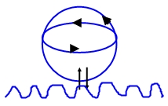
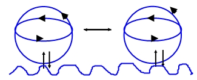
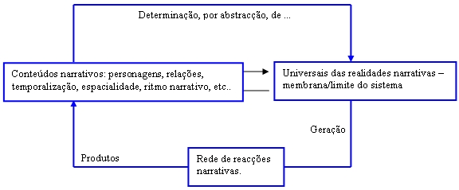
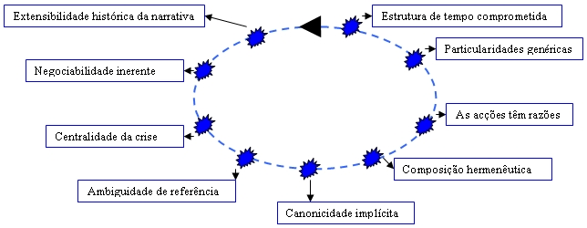
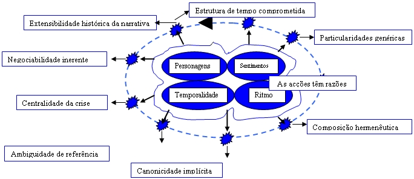

|
Autopoiesis e Identidade Pessoal
1. O PROBLEMA
O modo, talvez o mais simples, de apresentar o problema que aqui nos trás, será o de o apresentar sob a forma interrogativa, recorrendo ao “dilema de James”: o que é que permanece de mim na corrente da consciência? O que é que, na consciência, constitui o que eu sou e que me solidifica, em contraposição ao que continuamente vou deixando de ser? O meu problema será então, para utilizar a expressão meridianamente clara de António Damásio, o problema da constituição “do sentido da existência de um proprietário e um espectador para esse filme” que é o filme da consciência (Damásio, 2000: 30), o sentido de um si que permanece na corrente evanescente da consciência, sabe que essa corrente corre e que lhe dá uma ordem e um sentido. Este problema é comummente tratado como o problema do self. O self será então o autor, ou, pelo menos, o espectador, ou o protagonista, consciente, do filme na consciência. Para simplificar, direi que self diz respeito ao problema da autoconsciência, da consciência da consciência, portanto. Para alguns autores, porém, o problema do self, ou do si, não é ainda o problema da identidade pessoal. É o que acontece com António Damásio. Para Damásio, enquanto a identidade pessoal, ou a pessoalidade, é um exclusivo humano, pelo contrário, o sentido de si, a autoconsciência, não. A autoconsciência e a capacidade de planear intencionalmente o futuro à luz do passado (constituindo-se desse modo uma autobiografia) são partilhadas por humanos e não humanos, como por exemplo, os bonobo e até certos cães: “Certos primatas, como os chimpanzés bonobo, têm um si autobiográfico e estou disposto a apostar que o mesmo se passa com alguns cães com quem me dou” (Ibidem, 230). Esta capacidade de dirigir a atenção para estados mentais internos e de lhes dar sentido (que não tem que ser linguístico) não é, pois, segundo Damásio, um exclusivo dos humanos. Defendo, noutro local que, deste modo, Damásio não estabelece uma fronteira clara entre o humano e o não humano (Teixeira, 2002), o que cria tantos problemas como aqueles que resolve. A minha proposta será, então, a de que o que distingue o humano do não humano é, ao contrário da proposta de Damásio, esta peculiar identidade entre o self, ou o si, e a identidade pessoal. No humano, o self, ou o si (que aqui serão usados indistintamente), tem que se actualizar numa configuração identitária particular, pois é isso que o distingue do não humano. A consciência de si, no humano, é a consciência de ser algo pessoalmente determinado. É essa configuração identitária que constitui o si humano, sem o que estaremos na presença de um si meramente somático ou orgânico, que tem pouco a dizer sobre o aquilo que é especificamente humano e que, de qualquer modo, não se diferencia, autoconscientemente, do não-si. Ou seja, não há si especificamente humano, ou self, sem identidade pessoal, por mais rudimentar que ela seja, como acontece no caso da identidade infantil. Talvez a confusão à volta do “conteúdo” semântico do termo si, ou self, possa ser esclarecido, ou clarificado, aceitando o princípio segundo o qual se podem pensar várias modalidades, ou níveis, de si, como, aliás, também o fazem António Damásio ou William James[1]. Assim, seguindo a tipologia de Francisco Varela, se procurarmos aquelas situações em que o para si mesmo (pour-soi) aparece e se constitui, poderemos discernir pelos menos cinco “si mesmo regionais”: “1) uma unidade mínima ou celular; 2) um ser corpóreo com a sua base imunológica; 3) um si mesmo perceptuo-motor associado à conduta animal; 4) um ‘eu’ sócio-linguístico de subjectividade e 5) o colectivo social composto pela totalidade das multi-individualidades” (2000: 79). O que aqui me interessará será o si mesmo enquanto “‘eu’ sócio-linguístico de subjectividade”. Repare-se que, para Francisco Varela, a subjectividade, ou seja, a capacidade de atendermos intencionalmente aos nossos estados internos, é sócio-linguística. Ora, não é isso o que acontece, por exemplo, e mais uma vez, com Damásio, para quem a subjectividade, a autoconsciência, dispensa a linguagem. Apresentada esta tese inicial (a defender e a sustentar mais à frente), outro modo, então, de colocar o problema do self e, correlativamente, da identidade pessoal, é perguntar pelo que é que, em mim, me é próprio, particular, essencial, para lá da contingência das minhas relações sociais? O que é que faz com que eu seja eu e não outro ou outros? Qual é minha diferença específica? Este é, em grande parte, o problema a que George Herbert Mead tenta responder (insatisfeito com as respostas de James). Para Mead o self constitui-se como uma unidade dual de um “eu” e um “mim”. Pelo “eu” o self individua-se, pelo “mim” o self socializa-se. Estes dois pólos são operativamente independentes mas referem-se necessariamente um ao outro (Mead: 1999). Diferentemente de James, no entanto, Mead vai pôr o acento tónico da sua investigação e das suas propostas não tanto na subjectivação espiritual do self mas na sua capacidade de introjectar os valores e as regras sociais, sem o que o self não pode constituir-se. Assim, a minha diferença específica resulta de um processo holístico de significação de si em que há um outro generalizado contra o qual eu reajo e pelo qual eu me constituo, através de uma circularidade necessária, em que nem o outro generalizado nem a reacção se podem dispensar. O eu é, de algum modo, a reacção visceral do corpo ao eu generalizado (ao ‘mim’), numa curiosa aproximação à tese, a defender mais à frente, segundo a qual o si mesmo se constitui através de uma modulação de um universal narrativo por parte do corpo: “O ‘eu’ é a reacção do organismo às atitudes dos outros; o ‘mim’ é a série de atitudes organizadas dos outros, que eu mesmo adopto. As atitudes dos outros constituem o ‘mim’ organizado e, logo, eu reajo contra elas como um ‘eu’” (Mead, 1999: 202). Temos, então, que o problema da identidade pessoal, se pode dividir, ou, mais exactamente, subdividir, em várias abordagens ou perspectivas. A primeira delas diria respeito à consciência de mim, a uma espécie de consciência monadológica, de tipo cartesiano ou leibniziano. Eu sou quereria dizer, aqui, ter uma pulsão interna de mim, autorreferencial, que dispensa o mundo. Mas, eu sou, num segundo tempo, quer dizer, também, que eu não sou algo, ao qual me refiro (não sou, por exemplo, res extensa). Ou seja, de mim eu vou até ao outro. Não que o movimento seja este, obrigatoria e geneticamente, de mim ao outro. Mas a verdade é que a referência de mim a mim é sempre um passo (à frente ou atrás) num movimento de externalização e diferenciação. O problema do si não é só, porém, um problema psíquico, um problema do universo psí, mas, mais amplamente, um problema marcadamente ontológico e, claro, epistemológico. E isto é assim não só porque a emergência de um si pessoal nos obriga à consideração epistemológica do um novo objecto (de um novo ser), mas, também, porque conforme o modo como eu decida responder àquelas perguntas diferirão as minhas respostas (e as minha perguntas) sobre, como diria Merlau Ponty, o “estofo” do mundo. Ver-se-á, então, como todo o conhecimento do mundo é um conhecimento de si ou, mais exactamente, uma construção de si e, logo, uma construção do mundo. E isto é assim porque, na medida em que todo o conhecimento constitui uma experiência, os seres humanos (e os outros seres vivos) não podem alienar-se de si no acto de conhecer. Pelo contrário, e aceitando os aforismos de Maturana e Varela segundo os quais “todo o fazer é conhecer e todo o conhecer é fazer” e “tudo que é dito é dito por alguém” (Maturana e Varela, 1990: 21), ver-se-á que a construção de si, ou da identidade pessoal, configurará o modo pelo qual se tem acesso à realidade, sendo que a informação sobre o mundo consistirá sempre num constructo que dirá tanto sobre o mundo como sobre o si mesmo. Mais simplesmente, pode dizer-se que qualquer concepção do mundo carrega sempre consigo uma concepção de si e que, inversamente, qualquer concepção de si envolve uma concepção do mundo. De facto, como nos diz Vittorio Guidano, inspirado em Maturana “qualquer observação – longe de ser ‘externa’ e, portanto, ‘objectiva’ – é auto-referencial. Sempre se reflecte a si mesma, quer dizer, à ordem perceptiva em que se baseia, mais que às qualidades intrínsecas do objecto percebido” (Guidano, 1994: 16). O que aqui queremos salientar é a vinculação íntima entre a construção de si e a construção do mundo, através de uma circularidade virtuosa. Assim sendo, um problema adjacente ao da natureza ontológica do si (e que, de facto, o constitui) é o problema epistemológico, o de saber como é que aquilo que eu sou vem a ser, ou, claro, como é que eu posso não ser, aceitando, pelo menos como hipótese teórica virtual e contra toda a evidencia cartesiana, a possibilidade de que, afinal, eu não seja ou que, nas palavras estimulantes de Miguel Gonçalves, a construção da identidade pessoal aconteça melhor e mais sadiamente através de um processo de autodesconhecimento (Gonçalves, 1995), numa utilização invertida da máxima socrática, “Conhece-te a ti mesmo”. Há, no entanto, quem não veja neste problema senão uma variante do problema, bem mais velho, do uno (ou da permanência) e do múltiplo (a da mudança), quer dizer, uma variante do combate entre Parménides e Heráclito, sendo que o uno configuraria o campo do essencialismo e da reificação do si e da identidade e o múltiplo configuraria o campo do construtivismo radical e do irrealismo, de que o Construccionismo Social seria o paradigma contemporaneamente dominante. Vendo bem, o problema até poderá ser o mesmo, mas as soluções contemporaneamente propostas são claramente novas. Desde logo, ver-se-á como a biologia pode irromper na construção do si, sem que isso signifique, como o propõe António Damásio, uma reducionismo biológico. Pelo contrário, a minha proposta, muito em particular, será a de tematizar a natureza e a construção do si a partir da biologia, mas de um modo que assume radicalmente a disjunção entre a fisiologia e a identidade pessoal, ou, se quisermos, a fisiologia e a humanidade, o homo sapiens sapiens e o humano (que Maturana identifica como homo sapiens amens). Uma solução anti-reducionista, portanto, no que coincidirei integralmente com Maturana, para quem o problema do si e da identidade pessoal não é um problema do domínio da biologia e, portanto, da autopoiesis entendida enquanto domínio estrito do vivo. Não que o humano dispense o biológico ou que se institua como tal em virtude de um plus essencialista e ou espiritualista. Mais simplesmente, direi que a identidade pessoal que institui o humano se estabelece no domínio do relacional, quer dizer, num domínio operacional diferenciado e irredutível a qualquer domínio fisiológico, embora o fisiológico seja necessário para que o relacional possa operar. Arriscando um pouco (ou um muito), no entanto, tentar-se-á extrapolar o conceito de autopoiesis (nascido da biologia) para o domínio do não biológico: o domínio do si e da identidade da pessoal, seguindo neste particular Niklas Luhmann. O objectivo não é, pois, o de introduzir um novo movimento de reducionismo biológico, mas o de estender o conceito de autopoiesis a um domínio em que, originalmente, ele não foi utilizado. A ideia é mostrar como é que a manutenção e constituição do sentido de si têm afinidades funcionais com a biologia e com a organização autopoiética, agora não num domínio molecular, mas num domínio de produção de sentido, em que é o sentido o substracto permanente de actualização e manutenção autopoiética. Propor-se-á, então, que o si mesmo se define como uma máquina psíquica autopoiética. Este é, no entanto, um projecto não isento de dificuldades. Maturana e Varela, em particular, desconfiam deste tipo de projectos de extensibilidade do conceito autopoiesis para fora da biologia. Mas a verdade é que não o recusam completamente. Francisco Varela, por exemplo, num prefácio a “De Máquinas y Seres Vivos”, escrito em 1984, intitulado “Vinte Anos Depois”, depois de criticar aquilo que ele chama “uma utilização literal ou estrita da ideia” (de autopoiesis) fora do domínio da biologia, aceita uma “utilização por continuidade”, em que se “permite ver que o fenómeno interpretativo é contínuo desde a sua origem até à sua manifestação humana” (1998: 51-52). O meu projecto será, em parte substancial, esse; o de mostrar como se pode entender a constituição e a manutenção da identidade pessoal através de um processo de continua re-actualização interpretativa do si em ordem à sua manutenção.
2. “VIVER É CONHECER”
“Viver é conhecer” constitui, do ponto de vista gnoseológico, a premissa fundamental de uma epistemologia de cariz biológico que tome em consideração a natureza autopoiética da vida. Em “De Maquinas y Seres Vivos”, o texto fundacional de Maturana e Varela relativo à autopoiesis, as máquinas autopoiéticas, os seres vivos, são definidas como unidades que “continuamente especificam e produzem a sua própria organização através da produção dos seus próprios componentes, debaixo de condições de contínua perturbação e compensação dessas perturbações (produção de componentes). Podemos dizer, então, que uma máquina autopoiética é um sistema homeostático que tem a sua própria organização como variável que mantém constante” (1973: 18). O que isto quer significar é que a vida, no acto mesmo de se constituir e consolidar, produz os seus próprios componentes como resposta a perturbações do meio em ordem à manutenção de si mesmo como sistema vivo, distinto do meio. De facto, as mudanças internas, embora despoletadas, ou engatilhadas, pelo meio, têm por fim, apenas e só, a conservação da organização ou sistema de produção de si mesmo. Mais especificamente, podemos dizer que as máquinas ou sistemas autopoiéticos são máquinas que transformam as perturbações em alimento de si mesmo, de tal modo que o seu produto é a sua própria organização. Isto tem o efeito de que os “movimentos” de reajuste interno em ordem à resposta a elementos perturbantes do meio, ou entorno, podem ser vistos como conduta reflexa relativamente a esse meio. Mais especificamente, os reajustes internos em ordem à manutenção da organização autopoiética por virtude de perturbações externas podem ser vistos, por um observador externo, como mecanismos de representação dessa perturbação. No entanto, as coisas não ocorrem assim. Em virtude dos mecanismos de sustentação autopoiética os sistemas autopoiéticos funcionam com determinação estrutural e clausura operacional. Em virtude da sua determinação estrutural os sistemas autopoiéticos funcionam nos termos daquilo que lhe é determinado pelo modo específico como se organizam as relações entre os seus componentes, pelo que é esse modo específico, ou essa dinâmica, de funcionar que determina o modo pelo qual as perturbações externas são compensadas através de reajustes. Por sua vez, em virtude da clausura operacional os sistemas autopoiéticos são estruturalmente fechados, embora energética e materialmente abertos, e estão desenhados de tal modo que quaisquer que sejam as perturbações do sistema as mudanças produzidas manifestam-se sempre em termos de outras mudanças no interior do próprio sistema em ordem à manutenção da constância das relações internas entre os componentes. Isto é o que acontece, em sentido estrito, com o sistema nervoso (como veremos mais à frente), embora o sistema nervoso não possa ser considerado, em sentido absoluto, um sistema autopoiético, pelo menos de primeira ordem[2]. Assim sendo, qualquer homologia entre a topografia, ou a conduta observada, do sistema e o meio ambiente, ou a ordem das perturbações externas, não pode ser entendida em termos de representação do meio no sistema (o que constitui a máxima adaptacionista clássica) mas antes o efeito da plasticidade ontogenética do sistema, ocorrida através de uma deriva de codeterminação entre o sistema e o meio. Isto é assim porque um sistema autopoiético, como já vimos, não funciona em termos de abertura operacional susceptível de processar inputs informacionais (que seriam transformados em outputs conductuais)[3]. O que está em causa é a ideia segundo a qual o meio ambiente do sistema despoleta as transformações e actualizações necessárias à manutenção da identidade e, portanto, da sobrevivência, do sistema, mas não especifica a natureza ou a direcção dessas transformações. Para utilizarmos uma distinção conhecida, poderíamos dizer que o meio ambiente é a causa (se bem que a ideia de causalidade linear também deva, aqui, ser questionada) mas não a razão das reestruturações internas do sistema. O primeiro mandamento de um sistema autopoiético é a manutenção da sua identidade enquanto organização, sendo que o domínio das interacções em que um sistema autopoiético é capaz de manter a sua identidade através da contínua redefinição de si mesmo, por meio de contínuas reformulação estruturais, em resposta às perturbações do ambiente, é o seu domínio cognoscitivo. Este domínio pode chamar-se assim (cognoscitivo) porque constitui um domínio conductual que, do ponto de vista do observador, se pode constituir como um domínio de descrições. Deste ponto de vista, então, a conduta do sistema constitui o seu modo de conhecer ou de especificar as relações possíveis com o ambiente, aquelas relações em que são possíveis compensações para as perturbações. Assim sendo, “toda a conduta é expressão de conhecimento (compensação de perturbações) e todo o conhecimento é conduta descritiva” (Maturana e Varela, 1973: 87). Viver será, então, transformar perturbações externas em conduta, sendo que esse operar constitui um domínio cognoscitivo susceptível de ser descrito como detendo sentido. Piaget, aliás, coincide integralmente com Maturana e Varela no seu projecto de biologização do conhecimento: “Começando pelo seu sentido geral devemos notar primeiro que não é contraditório considerar as funções cognitivas como sendo simultaneamente uma resultante ou um reflexo das auto-regulações orgânicas e como um órgão diferenciado que reciprocamente as determina no campo das trocas com o meio” (Piaget, 1978: 37). Esta é mesmo a primeira tese da obra magna de Piaget, “Biologia e Conhecimento”, para quem e pela qual o conhecimento reflecte a “organização auto-reguladora da vida”. Piaget, aliás, é suficientemente taxativo, na sua habitual clareza: “as funções cognitivas reflectem os mecanismos essenciais da auto-regulação orgânica” (Ibidem, 38). O ponto de vista de Piaget é, então, o de uma imbricação íntima entre o conhecer e o mecanismo biológico, pelo que o “sujeito” “penetra” no “objecto” com o seu organismo, até ao ponto de impossibilitar uma disjunção entre ambos (sujeito e objecto gnoseológicos), fazendo reverter integralmente aquele dualismo inicial[4]. Como se especificará mais à frente, poder-se-á dizer, do ponto de vista do observador, que os sistemas autopoiéticos, ou os sistemas orgânicos, do ponto de vista do seu funcionamento, imbricam biologia e cognição, transformam desordem em ordem ou ruído em sentido, na medida em que aquilo que são elementos perturbadores do ponto de vista do sistema são, a posteriori da sua resposta estrutural, transformados em conduta. Assim, quando se fala no sistema nervoso como um sistema de processamento de informação, está-se quase sempre a esquecer o carácter sistemicamente determinado dessa computação, que impede qualquer tipo de programa representacionista. Justamente, no entanto, e tendo em conta a etimologia da palavra computar (cum-putare. Em latim putare significa considerar e cum, as coisas em conjunto), talvez se pudesse dizer que as unidades autopoiéticas se computam a si mesmas na medida que reagem às perturbações do entorno como sistemas holísticos e autorreferenciais de significado, em que cada mudança numa parte do sistema acarreta sempre reordenações nalguma ou na totalidade das outras partes. Mais estritamente, vale a pena chamar aqui à colação um texto seminal de Heinz von Foerster, em que este demonstra de modo claro que “o princípio da computação recursiva está na base de todo o processo de conhecimento e da vida mesma” (1998: 44), já que os sistemas sensoriais “são cegos à qualidade da excitação e respondem unicamente à quantidade daquela. Isto é assombroso mas não deve surpreender-nos, já que, ‘ali fora’, efectivamente, não há luz nem calor, só existem ondas electromagnéticas; tão pouco há, ‘ali fora’, som ou música, só existem flutuações periódicas da pressão de ar; ‘ali fora’ não há calor nem frio, só existem moléculas que se movem com maior ou menos energia cinética média, e por aí adiante. Finalmente, ‘ali fora’ não há, com toda a certeza, dor” (Ibidem, 42). Esta indiferenciação qualitativa do mundo “externo” (que não se apresenta, de facto, como mundo “externo”, para o sistema) é aquilo a que Heinz von Foerster chama “princípio da codificação não diferenciada”. A sua proposição (que o próprio estima como escandalosa) é, então, a de que o conhecimento consiste na computação de quantidades sensoriais qualitativamente indiferenciadas em ordem a uma “‘homeostáse cognoscitiva’: ‘o sistema nervoso está organizado (ou organiza-se a si mesmo) de maneira que computa uma realidade estável’” (Ibidem, p. 54). O que aqui está em causa é pois, como nos assinala, von Foerster, um tipo de conhecimento, o conhecimento próprio do vivo, que “regulamente a sua própria regulamentação” e em que a desregulamentação equivale à morte do sistema, à quebra da sua identidade organizacional e à sua provável redefinição sistémica em novos termos que não os termos de um sistema autopoiético. A tese desta secção é de que a vida envolve necessariamente o conhecimento, de que o acto de se auto-sustentar através da computação de si mesmo a partir de perturbações externas, produzindo, correlativamente, conduta, a que um observador atribui sentido, é a essência mesma do conhecer. Sem esta dobragem permanente de si sobre si, produzindo-se, o vivo não é capaz de manter a sua organização autopoiética e desintegra-se. Veremos, a seguir, que viver, conhecendo, é, no início, uma função identitária, ou seja, um movimento que tem por “objectivo” auto-constituir-se, distinguindo o si do não si. Veremos, então, como a autopoiesis do vivo se cruza com a construção da individualidade enquanto unidade sistémica diferenciada do ambiente.
3. O VIVO COMO SI MESMO
O vivo, definido como sistema autopoiético, põe no centro do seu operar a autonomia. Pela sua natureza autónoma, o vivo tem por função autoproduzir-se como distinto do meio ambiente, de modo autorreferido. De certo modo, o vivo responde à necessidade epistemológica de que uma unidade se constitua, sempre, através de um acto de distinção. Esse acto de distinção, por seu lado, constitui-se como uma singularidade face a um fundo. Essa singularidade, por definição, deve ser capaz de movimentos de autoconstituição susceptíveis de produzirem ordem e coerência sistémica que a façam emergir como singularidade. A afirmação da natureza autopoiética do vivo como mecanismo identitário quer significar isso mesmo, capacidade de, por si e para si, autonomamente, se distinguir do não si. De facto, o fechamento ou clausura operacional dos seres vivos é uma condição necessária para a sua relação (inter-objectiva[5]) com outros sis e com o entorno. Francisco Varela, no último dos seus livros, que compila e plasma o essencial das suas investigações (“El Fenómeno de la Vida”), refere que a compreensão da autonomia do vivo exige a interconexão de duas proposições: 1. Os organismos são fundamentalmente um processo de constituição de uma identidade. 2. A identidade emergente do organismo proporciona, lógica e mecanicamente, o ponto de referência para um domínio de interacções (2000: 51-52). Como vimos fugidiamente na introdução, e desenvolveremos mais à frente, desde logo estas duas proposições enunciam, ainda que a um nível puramente lógico, que previa ou correlativamente à compreensão do mundo, ou se quisermos, para que se estabeleça uma interacção com o mundo, tem que se dar sempre um movimento de constituição de si. No entanto, o que pretendo assinalar, para já, são as consequências que Varela retira da conjugação daquelas duas proposições. Assim, neste domínio sumamente abstracto, não estamos ainda, obviamente, no domínio de um movimento de personalização, de identificação pessoal, mas tão só, ao nível molecular, na presença de um movimento de criação de coerências operativas. Identidade quer dizer, a este nível, a capacidade que os sistemas biológicos têm de criar, de si para si, redes estruturais de construção de si através das perturbações do ambiente, e isto de modo recorrentemente autoconfirmador. Como também assinala Varela, este processo ocorre sempre através de um fechamento operacional, quer dizer, através de processos que engendram eles mesmos as perturbações admissíveis em ordem ao reforço de si. Nas palavras de Varela, este é “um processo de interconexão reflexiva circular, cujo efeito primário é a sua própria produção” (Ibidem, p. 51). Mais importante, porém, para o nosso projecto de descortinar os mecanismos de produção do si mesmo, é a constatação de que é justamente em função do fechamento operacional dos sistemas autopoiéticos que é possível a emergência de uma coerência global, ou identidade, que dá ao sistema a capacidade de se distinguir do ambiente. E isto ocorre sem que seja necessário especificar, no sistema, um centro controlador das relações e dos processos a ocorrer entre os elementos da organização autopoiética o que, por sua vez, também dispensa, concomitantemente, qualquer tentação substancializadora relativamente a alguns desses componentes ou partes desses processos. Temos então uma identidade sem centro e sem Unidade Central de Processamento, que emerge de uma rede autorreferida de produção de componentes. Naturalmente, há que esclarecer este conceito de emergência, central numa fenomenologia do vivo de cariz autopoiético e central também numa concepção da identidade pessoal ou do si susceptível de superar toda a reificação, de que o reducionismo biológico não parece ser mais que uma variante. “Emergência” refere-se então, e antes de tudo o mais, no contexto estritamente biológico, à natureza organizacional do vivo, distanciando-se de uma perspectiva associacionista que define o vivo em função de uma agregação determinada de componentes moleculares. Pelo contrário, aquilo que a concepção autopoiética do vivo nos trás é que aquilo que o define deixa de ser um conjunto de elementos ou propriedades para passar a ser uma organização que emerge globalmente, sendo que a emergência descreve esse processo pelo qual a partir de elementos locais se produz um estado global que não é nem independente nem redutível às componentes locais. De facto, ainda que se possa fazer uma descrição integral de uma célula através da listagem dos seus componentes químicos e moleculares, nem por isso essa lista especificará aquilo que constitui a célula, no seu carácter de totalidade sistémica. Ou seja, a lista das propriedades de uma célula, ou mesmo a descrição das relações particulares entre os sues componentes, não especifica aquilo que a constitui como sistema celular. Essa especificação só pode ocorrer através de uma organização que emerge da totalidade dos sistemas celulares, a organização autopoiética, e que não se reduz às suas partes. Muito particularmente, o emergentismo, pelo menos conforme o trataremos aqui, revela de modo especialmente conspícuo, a natureza virtual (irreal) de toda a centralidade cognitiva e identitária dos sistemas autopoiéticos, biológicos ou não biológicos, uma vez que nenhuma das partes ou componentes do sistema é, por si só, elemento decisivo de articulação ou coordenador da totalidade emergente e sem que isso nos empeça a tematização do sistema autopoiético emergente como elemento de reiteração e constituição do si. Tematizando o problema da relação entre o cérebro e a mente (no qual não nos centraremos, aqui, mais que o necessário), Varela utiliza o aforismo segundo o qual “a mente não existe nem não existe”, numa curiosa via do meio entre a reificação reducionista e o niilismo cognitivo (a que não é estranha a sua formação búdica), como via metafórica para apresentar a sua tese de que o emergentismo nos permite tematizar aqueles tipo de organizações sistémicas pelas quais um estado global (no caso, a mente) é produzido a partir de regras locais (os circuitos neuronais), sendo que estas não esgotam aquele, nem aquele se explica integralmente por redução àquelas. Mais ainda, o estado emergente tem o efeito de alterar os circuitos locais que sustentam causalmente o efeito global, num curioso efeito de retroacção e recursividade. É isso que Varela refere na seguinte passagem: “Então, quando vêem um animal em movimento, ou me vêem a mim dirigindo-lhes a palavra, comporto-me como uma unidade coerente, não como uma mera justaposição de movimento, voz, olhar e postura. Sou uma unidade integrada, mais ou menos harmónica a que denomino ‘mim mesmo’ ou ‘minha’ mente, e vocês interactuam comigo a esse nível.: ‘Olá Francisco’. Essa interacção está a ocorrer ao nível da individualidade, que é o global, o emergente. Porém, sabemos que o global é ao mesmo tempo causa e consequência das acções locais que ocorrem, no meu corpo, a todo o momento” (2000: 244). Um modo particular de perceber o emergentismo é analisá-lo a partir do enfoque reducionista, pelo qual o sistema se articula a partir de um algoritmo que regula o relacionamento dos elementos básicos. Ou seja, pelo reducionismo o sistema apoia-se em regras que articulam elementos básicos ou em elementos básicos articulados por regras. No entanto, este enfoque põe demasiados problemas à sustentação dos sistemas biológicos e à generalidade dos outros sistemas não biológicos, desde logo os sistemas psíquicos e sociais. Como nos recorda Luhmann, se quisermos reduzir, como o pede certa sociologia reducionista, os sistemas sociais à Psicologia, teríamos, igualmente, que reduzir a Psicologia aos sistemas neuronais e estes aos sistemas moleculares e, no limite, ambos aos sistemas atómicos (Luhmann: 1996b). A proposta de Luhmann de tematização do emergentismo é a de que aquilo que corresponde e sustenta a unidade dos sistemas não é a unidade dos elementos ou regras (quaisquer que eles ou elas sejam) mas a capacidade de enlace que se dá nos processos de produção de componentes e de relações. De facto, os sistemas autopoiéticos constituem-se através de um processo de produção de sentido que passa pela selecção, no seu interior, das relações possíveis e necessárias e, por exclusão, daquelas que são excedentárias e, por isso, irrelevantes para a sua identidade. É esse processo de enlace, de selecção, que faz emergir o sistema, sendo que esse processo não decorre das características físicas do sistema, ou seja, de unidades substanciais básicas nas quais assentaria a sua unidade, decorrendo antes de um processo contingente de reacção às perturbações do meio (ainda que essas perturbações possam engendrar, no sistema, padrões de resposta, em virtude da sua recorrência). Assim, diz-nos Luhmann, “o surgimento de uma nova ordem qualitativa não pode deduzir-se a partir das características materiais ou energéticas sobre as quais está sustentada. Se se fizessem presentes ao sistemas essas características materiais ou energéticas na operação que emerge na nova ordem qualitativa, estas características provocariam um efeito de aniquilação ... por exemplo, a electrónica interna do átomo transforma-se quando surge a ordem emergente das macromoléculas. Daqui que a energia atómica não tome parte do processo químico que constitui a célula (felizmente!)” (1996b: 195-196). Algumas pistas de desenvolvimento para uma teoria do si mesmo e da identidade pessoal começam agora a vir ao de cima. Mas situemo-nos, ainda, sobretudo, no processo de constituição do si mesmo biológico. O sistema autopoiético distingue-se do meio ambiente através de um processo de autoconstituição e autocriação. No entanto, o acto de distinção depende tanto do movimento que se distingue como do ambiente que provê à unidade a alteridade necessária à sua constituição, através da forma de uma contrastação. Do ponto de vista estritamente biológico isto entende-se bem, na medida em que, sendo embora operacionalmente e organizacionalmente fechadas, as unidades autopoiéticas são energeticamente abertas. Ou seja, constituindo-se embora enquanto distinções do meio ambiente, as unidades biológicas dependem desse ambiente para sobreviverem, através de um provimento energético. Estabelece-se pois, aqui, uma dialéctica entre o vivo e o seu ambiente que permite pensar que, se é certo que o ambiente constitui as condições amplas em que o vivo se pode constituir e subsistir, nem por isso é menos relevante que também o ambiente se constitua enquanto efeito das sucessivas trocas energéticas e perturbações operacionais que ocorrem com e no sistema autopoiético (há que considerar que cada sistema é, para outro sistema, parte do ambiente ou contexto). Mais simplesmente, pode dizer-se que na medida em que uma distinção constitui uma unidade, essa distinção produz, correlativamente, o seu meio ambiente, ao definir o que fica fora dela. Acontece que esta constituição do ambiente, ou seja, daquilo que não é sistema, paradoxalmente, só se pode constituir do ponto de vista daquilo que é operacionalmente possível ao próprio sistema. Temos então que a constituição de uma unidade autopoiética enquanto mecanismo identitário básico, ocorre não só como um virar-se biológico (organizacional) para si, mas também como a criação de uma perspectiva sobre o não si. Essa perspectiva é que permite à identidade biológica relacionar-se com o que não faz parte das suas definições materiais e moleculares. “Na nossa prática de biólogos, diz-nos Francisco Varela, movemo-nos num e noutro terreno. Usamos e manipulamos princípios e propriedade físico-químicas, porém, de imediato, podemos utilizar interpretações e significados vistos desde o ponto de vista do sistema de vida” (2000: 85). Vai ser então esta perspectiva, este modo operacionalmente único, encastrado numa deriva onto e filogenética, aquilo que vai prover o sistema de um si e de um ambiente, ou de um não si, sempre caracterizável, porém, em termos do “olhar” produzido pelo sistema. Os sistemas biológicos estão aqui, porém, perante um dos seus maiores desafios: o desafio de se constituírem distinguindo-se do ambiente, sendo que, embora o ambiente só possa ser “pensado” nos termos do próprio sistema, sem um ambiente pensado e auto-referido, de um modo pelo menos negativo, o sistema não é pensável. Este paradoxo de os sistemas biológicos, autopoiéticos por definição e, portanto, auto-organizados, dependerem do entorno para se autonomizarem leva, por exemplo, Edgar Morin a falar não da natureza auto-organizativa dos sistemas biológicos mas sim da sua “auto-eco-organização” (1994: 70), pelo que a auto-organização sistémica seria dependente do ambiente, do ecossistema. O mesmo, aliás, tinha já sido referido por von Foerster, para quem os sistemas auto-organizados sofrem do paradoxo de necessitarem de mundo externo para afirmarem a sua autonomia (H. von Foerster, 1960). O problema salientado por Morin e von Foerster é o da conceptualização de sistemas, paradoxalmente, auto-referidos, mas que exigem uma abertura termodinâmica, ao ponto de levar Morin a afirmar que “na autonomia há, pois, uma profunda dependência energética, informativa e organizativa relativamente ao mundo exterior” (Morin, 1994: 70), o que, no limite, só pode ser entendido como logicamente impossível, na medida em que é uma asserção contraditória com a clausura operacional dos sistemas autopoiéticos (que não, como já vimos, com a sua abertura energética). O problema que aqui se põe, é, pois, de modo conspícuo, o da própria razoabilidade da concepção de sistemas auto-organizados e auto-referidos, já que essa concepção não seria possível sem algum tipo de abertura. Seria paradoxal, pois, do ponto de vista de uma objecção possível à concepção de sistemas auto-organizados e autopoiéticos, que um tipo específico de sistemas, os sistemas auto-organizados e, por maioria de razões, os sistemas autopoiéticos, produzissem eles próprios, a partir de si mesmos, a natureza da sua distinção com o ambiente. Isto acarretaria a conclusão que o ambiente seria produzido, como uma distinção, pelo próprio sistema e nos termos dos seus mecanismos operacionais, através de um processo recorrentemente tautológico, o que não seria capaz de explicar a mudança e a inovação sistémica. Em suma: ou os sistemas auto-organizados e autopoiéticos são meramente tautológicos e incapazes de explicar a inovação ou, em alternativa, são impossíveis de se conceber como tal porque o seu fechamento exige, paradoxalmente, uma abertura. Luhmann, muito em particular, encara de frente estas objecções e leva especialmente longe a análise do paradoxo da autonomia dos sistemas autopoiéticos, propondo que estes têm que se “destautologizar” para serem recursivamente produtivos e não vacuamente, ou solipsisticamente, tautológicos. Luhmann enfrenta este problema defendendo, determinadamente, a integral auto-referencia dos sistemas autopoiéticos, sendo que, porém, “cada auto-referência deve enfrentar o problema da interrupção do círculo expressamente tautológico. A simples referência do si mesmo a si mesmo deve enriquecer-se com um significado adicional, recrutado, por assim dizer, pelo círculo que só se significa a si mesmo” (1998: 414). Ora, este significado adicional capaz de “destautologizar” o círculo autorreferido de si a si deve acontecer através de um processo de assimetrização que só pode ocorrer através da introdução de pontos de referência no círculo, capazes de dinamizar a tautologia ... “destautologizando-a”. Estes pontos de referência produzem-se, por exemplo, através da tematização contínua da diferença entre si e o entorno ou entre o passado e o futuro, sendo que uma das componentes da díade tem a função de refulgir como alternativa condicionante da totalidade do sistema. No entanto, estes pontos de referência têm que funcionar através da opacidade de si, quer dizer, como elementos ou distinções “naturais”, ocultando que também eles são produzidos pelo próprio sistema como instrumentos de destautologização ou assimetrização. Isto quer dizer que todos os sistemas funcionam dependendo de um ponto cego que não só ocorre como epistemologicamente inevitável mas também como ontologicamente, ou sistemicamente, necessário. Ou seja, o ponto cego do sistema, pelo qual ele não sabe que não sabe da sua autorreferência, permite ao sistema a sua destautologização e ou assimetrização, nos termos de uma nova lógica e uma nova causalidade circulares. Por outra via, embora, Francisco Varela responde ao problema da novidade cognitiva e da articulação da autorreferência com a hetero-referência defendendo a existência, nos sistemas autopoiéticos, daquilo a que ele chama uma “quebra” ou “falta” (Varela, 2000: 86-87) no interior do sistema autopoiético (do sistema vivo), que se manifesta através da sua distinção de um meio ambiente que o perturba e obriga a constantes esforços de preenchimento dessa quebra. Naturalmente, como já foi referido, a resposta re-organizativa do sistema à perturbação (que refulge no sistema como uma quebra ou uma proto-cisão do si) só pode ocorrer do ponto de vista do sistema e não do ponto de vista das pressões ambientais. Para Varela, “manifesta-se um inevitável contratempo entre um sistema autónomo e o seu meio ambiente: há sempre algo que o sistema deve prover a partir da sua perspectiva de totalidade” (2000: 87). Mais: para Varela é esta acção, ou este movimento de correcção (ou de construção) permanente de si, que constitui a natureza mesma do acto cognitivo: “A acção que produz um mundo é um intento para re-estabelecer uma relação com o meio ambiente que desafia a coerência interna mediante encontros e perturbações. Porém, estas acções, ao mesmo tempo, demarcam e separam o sistema desse meio ambiente, dando lugar a um mundo distinto” (Ibidem: 88). A ideia de Varela é a de que o contraste entre o mundo do sistema e o meio ambiente produz um “excesso de significação” que é o alimento mesmo do sistema autopoiético, quer dizer, o alimento mesmo de si como contraponto ao não si. Claro, a conceptualização, ou a materialização mesma do meio ambiente, só se pode fazer em termos das estruturas do sistema, reafirmámo-lo, uma vez que, de modo similar a von Foerster, do ponto de vista do organismo, só existe no meio ambiente um “isso”, um “algo”, “um material básico para in-formar desde a sua própria perspectiva” (Ibidem: 89). Concluindo esta secção, o que se quis salientar foi o modo auto-referido como o vivo se constitui, através da produção de uma perspectiva de si e do mundo que lhe permite reactualizar-se e sustentar-se permanentemente através daquilo que Varela chamou um “excedente de significação” entre si e o meio ambiente ou o não si. Estamos ainda, no entanto, no domínio de um si mesmo puramente somático, próximo daquilo a que Damásio chama o proto-si, que se resume à “gestão automatizada da vida do organismo” (2000: 43) e que estabelece as funções reguladoras inatas do organismo. Também próximos de Damásio, estamos ainda num domínio “precursor não consciente dos níveis do si que surgem nas nossas mentes” (Ibidem, p. 42). Parece-me, no entanto, que a concepção da identidade somática através da autopoiesis, enquanto organização específica do vivo, é especialmente operativa para a tematização não só do si mesmo biológico mas também do si mesmo psíquico ou do self, e isto a partir de uma teoria de sistemas que inclua uma concepção da autopoiesis não exclusivamente redutível ao seu originário domínio biológico. Há, no entanto, que dar alguns passos intermédios até alcançar a justificação desse desiderato.
4. DO SI MESMO BIOLÓGICO AO SI MESMO HUMANO
4.1. CONDUTA E SISTEMA NERVOSO
No “A Árvore do Conhecimento”, Maturana e Varela descrevem-nos uma experiência com um sapo, realizada em 1945 por J.R.W. Sperry, tendo em vista evidenciar o determinismo estrutural dos sistemas nervosos animais que, por serem biológicos, se encontram encastrados na história das suas acções biológicas e corporais, bem de acordo com a sua máxima segundo a qual “não vemos o ‘espaço’ do mundo mas vivemos o nosso campo visual; não vemos as ‘cores’ do mundo, vivemos o nosso espaço cromático”. Nos termos daquela experiência, pegou-se num girino (a larva de um sapo) e cortou-se-lhe uma pálpebra (sem lesionar o nervo óptico), de modo a poder rodar-se-lhe o olho 180 graus, após o que se deixou crescer o animal até à idade adulta. Completado o seu processo de amadurecimento pôs-se o sapo operado perante uma mosca, tapando-se o seu olho alterado. Sem hesitações, o sapo lança a sua língua para o insecto, conseguindo capturá-lo de modo perfeito. Após isto repete-se a experiência mas, desta vez, tapa-se não o olho operado mas o olho são, obrigando o sapo a operar em função daquilo que lhe é permitido pelo olho alterado. E o que se observa neste caso é que o animal erra o alvo exactamente em 180 graus. O que se passa é que, se o insecto está à sua frente e em baixo o sapo “dispara” a sua língua exactamente para o lugar inverso, com um desvio, portanto, de 180 graus, ou seja, para trás e em cima. Os resultados da experiência, segundo o relato de Maturana e Varela, são invariáveis, ou seja, são sempre exactamente os mesmos e de acordo com o desvio que o experimentador imprimiu ao olho do animal ainda na sua fase de insipiente desenvolvimento. O que se passa é que o sapo lança a sua língua em função da imagem que foi formada na sua retina, contando, porém, que esta está na sua posição normal e não invertida, como de facto está. A conclusão que daqui se pretende tirar, e depois de percorridas as páginas anteriores, é quase óbvia. Para o sapo, ao contrário do que supõe o Realismo, não existe um “em baixo” e um “em cima” absolutos, um atrás e um à frente absolutos, num mundo exterior, o mesmo se passando aliás, como nos advertem Maturana e Varela, para os observadores desta experiência. A única coisa de que se pode falar é de um determinado tipo de relações internas ao sistema cognitivo do sapo que prescrevem que, em presença de certa perturbação retiniana, sejam despoletadas certas contracções musculares capazes de moverem a língua, a boca, o pescoço e, no limite, todo o corpo do sapo, em ordem à eliminação dessa perturbação. O que se passa no caso do sapo alterado é que o seu cérebro, em presença de uma perturbação retiniana, opera não através de uma computação de um mundo externo a si mesmo (operação que o conduziria a uma correcção das condições que lhe permitissem caçar o insecto) mas através de uma activação de certas recorrências sensório-motoras entre a posição da retina e certos movimentos musculares, nomeadamente da língua, da boca e do pescoço, ainda que a primeira hipótese pareça a mais evidente a um observador de senso-comum representacionista. O que aqui se pretende destacar, numa primeira abordagem, é que o funcionamento do sistema nervoso, na medida em que este é uma unidade autopoiética de segundo grau (que acopla, portanto, unidades autopoiéticas de primeiro grau), funciona segundo os princípios da determinação estrutural e da clausura operacional, pelo que a conduta daí resultante é uma função das suas relações estruturais internas, ou seja, da sua estrutura de conexões neuronais. A constituição do sistema nervoso diz-nos que quaisquer que sejam as suas mudanças, estas acabam por produzir outras mudanças no interior do próprio sistema com o objectivo de manter constantes certas relações entre os seus componentes particulares. O meio, como já vimos relativamente às unidades autopoiéticas de primeiro grau, não pode determinar o funcionamento do sistema nervoso, mas simplesmente despoletar certo tipo de operações determinadas pela sua estrutura em ordem à sua manutenção enquanto unidade autopoiética de segunda ordem. Ora, acontece que as reorganizações estruturais dos sistemas nervosos dependem das suas histórias particulares de acoplamento estrutural, histórias essas que definem o percurso individual de cada sistema autopoiético desde uma estrutura inicial até uma complexidade crescente de estruturas e a uma capacidade crescente de resistir às perturbações mais diversas. E estas interacções (dadas nos sucessivos acoplamentos estruturais), não será demais dizê-lo, não são interacções instrutivas do meio no sistema (para o qual essa diferença não faz sentido) mas antes perturbações que, pela sua reiteração, tornar-se-ão decisivas na constituição da história estrutural do sistema. É isso que nos querem dizer Maturana e Varela ao referirem que “a ontogenia de todo o ser vivo consiste na sua contínua transformação estrutural, num processo que, por um lado, ocorre nele sem interrupção nem da sua identidade nem do seu acoplamento estrutural com o seu meio desde o seu início até à sua desintegração final, e por outro lado, segue um caminho particular seleccionado na sua história de interacções pela sequência de mudanças estruturais que estas gatilharam nele” (Maturana e Varela, 1990: 109). Deste ponto de vista, portanto, aquilo a que chamamos conduta dos organismos não corresponde a um processo interno determinado pelo sistema nervoso (já que o sistema nervoso não se conduz para intenção alguma fora de si mesmo) mas à descrição que dele é feito por observadores, descrição, por definição, externa à identidade do próprio sistema. O que se quer afirmar é que, ainda que possamos dizer adequadamente que as mudanças estruturais de um sistema determinam o estado do organismo observado, a verdade é que o estado e as mudanças de estado do organismo em relação a um ambiente determinado são sempre e somente orientadas pela necessidade dos organismos manterem a sua autopoiesis, pelo que qualquer mudança, sendo embora de um ponto de vista exterior sempre observada como uma conduta, nada diz quanto à intencionalidade do sistema (embora possa dizer algo, e frequentemente diz, a respeito das expectativas do observador). No entanto, se o funcionamento do sistema nervoso nada nos diz quanto a uma actividade conductual intencional, quer dizer, nada nos diz a respeito de finalidades relativamente às suas interacções ambientais, já, pelo contrário, se pode e deve pensar o sistema nervoso como dotado de um dinamismo de autocorrecções e equilibrações sistemáticas que, de modo dramático, luta permanentemente pelo enrijecimento e pela plasticidade das suas redes celulares de modo a “ampliar o campo das possíveis correlações sensório-motoras do organismo e a expandir o domínio da conduta” (Maturana e Varela, 1990: 140)[6]. É o que acontece com certo tipo de células receptoras (para além daquelas outras que têm a finalidade de se oferecer às perturbações externas) que têm a função de induzir mudanças globais no sistema neuronal quando detectam certas anomalias no meio interno em função das quais essas anomalias são corrigidas. Maturana e Varela apresentam-nos o caso específico de certas células quimio-receptoras de determinadas artérias que alteram o seu estado em função da mudança das diferentes concentrações presentes no meio sanguíneo dos vertebrados. Em função das suas mudanças de estado, despoletadas pelas mudanças das concentrações sanguíneas, essas células vão modificar, por sua vez, o estado de certos neurónios que através das suas mudanças contribuem para uma re-equilibração das concentrações sanguíneas, que por sua vez despoletaram todo o processo. Estas mudanças podem ou não dar origem a comportamentos motores diferenciados. Pode então dizer-se, na bela expressão de Maturana e Varela, que “toda a conduta é uma visão externa da dança de relações internas do organismo” (Maturana e Varela, 1990: 141). A conduta de um organismo corresponde, pois, a uma atribuição externa e não a uma finalidade orgânica internamente determinada. Caberá, depois, ao investigador descobrir as coerências ou circuitos neuronais que são responsáveis por esta ou aquela conduta. No entanto, e naturalmente, as coerências neuronais funcionam segundo certo grau de invariabilidade comum aos membros de determinada espécie. A plasticidade neuronal não é uma plasticidade ilimitada, sendo constrangida por linhas de conectividade que especificam certas arquitecturas comuns. De igual modo, como de alguma forma já foi ficando implícito, as mudanças estruturais dos sistemas neuronais como resposta a perturbações, não são nem podem ser efeito de conexões sinápticas particulares mas sim de padrões de conectividade locais. As fendas sinápticas não correspondem a espaços privativos de relações entre neurónios, mas consistem antes em espaços de múltiplas inter-relações químicas e eléctricas determinadas por outros neurónios, em função de outras fendas sinápticas banhadas por elementos carreados através da corrente sanguínea e provenientes de todas as partes do organismo, segundo concentrações muitas vezes despoletadas por perturbações externas ao sistema. As relações entre os neurónios resultam, então, de delicados equilíbrios, matizados por um elevadíssimo número de elementos que despoletam mudanças locais. Deste ponto de vista, virtualmente todas as relações entre o sistema e outros elementos são susceptíveis de causar mudanças estruturais no sistema, sejam elas mais ou menos evidentes, mais ou menos imediatas ou mais ou menos diferidas nos tempo[7]. Pode dizer-se que esta é uma descrição, embora muito geral, do tipo de funcionamento segundo o qual os “organismos nervosos” alargam os seus domínios de interacções. Trata-se, então, de “acoplar as superfícies sensoriais e motoras mediante uma rede de neurónios cuja configuração pode ser muito variada” (Maturana e Varela, 1990: 136)[8]. Há pois uma plasticidade de altíssimo grau que é intrínseca às arquitecturas neuronais, particularmente às dos mamíferos superiores. Convém que fique claro, porém, que essa plasticidade é relativa não a uma presumível capacidade adaptativa ao meio, através de reordenações neuronais sucessivas em ordem à sua correspondência óptima com um meio sucessivamente internalizado, mas, pelo contrário, é relativa à sua capacidade de sucessivas mudanças estruturais, de forma a manter o seu acoplamento estrutural com o meio em resultado de contínuas perturbações. Maturana e Varela advertem-nos que, do ponto de vista do observador, estas reordenações estruturais da organização sistémica nervosa podem ser, e frequentemente são, entendidas como uma aprendizagem adequada. Do mesmo modo, essas mudanças, podem ser entendidas como correspondendo às necessidades impostas pelo meio. No entanto, isso só é assim de maneira muita ampla, porquanto as condições do meio não especificam positivamente mas só negativamente as derivas orgânicas dos sistemas autopoiéticos. O que acontece verdadeiramente é que o organismo e o meio coexistem num processo de interacção e causação de mudanças estruturais, congruentes com as suas mútuas manutenções de identidade e autonomia. A não ser assim, como também já dissemos, acontece a morte e ou a desintegração. Uma das consequências desta sucinta descrição do sistema nervoso e dos seus âmbitos conductuais é o reforço de tese central do pensamento construtivista e autopoiético segundo a qual o conhecimento, humano e não humano, não opera através de representações do mundo. O sistema nervoso, e em particular o sistema nervoso humano, funciona com determinismo estrutural e clausura operacional, pelo que o meio não pode determinar a natureza das imagens, dos conceitos e das acções do organismo. O que o meio pode fazer é engatilhar ou despoletar determinadas configurações neuronais correspondentes a essas imagens, conceitos e acções, mas nada nos pode dizer acerca da sua natureza semântica ou sintáctica[9]. Acontece que, porque o sistema nervoso funciona com determinismo estrutural e clausura operacional, ele constitui uma rede neuronal fechada para quem a própria corporalidade em que se aloja constitui o seu ambiente, quer dizer, o universo dos seus elementos externos de perturbação. No caso do sistema nervoso, acoplamento ao meio quer dizer acoplamento ao corpo que lhe é próximo, através de células sensoras e efectoras que, porém, também neste caso, não põem em causa a clausura operacional do sistema, uma vez que o que ocorre nelas não é captação ou a transmissão de informação, mas sim a capacidade de se deixar perturbar e de perturbar o seu ambiente (veja-se o conceito de transdução na nota 8). Maturana e Varela convidam-nos, com o seu pensamento autopoiético, a considerar uma via média entre o solipsismo e o realismo objectivista, uma via que considere a natureza sistémica (e portanto auto-referente) da nossa cognição, mas que também seja capaz de considerar as suas relações com o contexto que o transcende, introduzindo a distinção entre os domínios diferenciados do sistema e do observador como a distinção capaz de conciliar a compreensão do funcionamento circular dos sistemas biológicos com a compreensão das relações desses sistemas com o meio ambiente. No entanto, a compreensão destes dois domínios (os domínios do observador e do sistema) exige que a reflexão epistemológica os mantenha rigorosamente separados, sob perigo de equívocos permanentes e de longo alcance. Feito isto, mantendo rigorosamente separados os domínios respectivos de observação e do sistema, “não necessitamos de recorrer a representações, nem necessitamos de negar que o sistema opera num ambiente com o qual é comensurável como resultado da sua história de acoplamento estrutural” (Maturana e Varela, 1990: 116)[10]. Então, tendo em conta a nossa pesquisa daquilo a que poderemos adequadamente chamar conhecimento e tendo assente esta divisão central entre os domínios do observador e do sistema, poderemos dizer, com alguma segurança, que toda a operação de um sistema autopoiético, observada como uma conduta, pode ser entendida como um acto de conhecimento. Podemos assim retornar, de modo argumentativamente sustentado, à premissa central do paradigma construtivista, particularmente do paradigma autopoiético, segundo o qual viver, enquanto manutenção do acoplamento estrutural de um ser vivo com o seu meio, é conhecer. E, neste processo de sobrevivência através de contínuos acoplamentos estruturais, o sistema nervoso é duplamente decisivo no processo cognoscitivo: através da ampliação dos estados possíveis do organismo, em virtude da sua imensa plasticidade capaz de “configurações sensório-motoras” extremamente diversificadas e também em virtude de permitir ao organismo formas variadas de acoplamentos estruturais com o meio ambiente, que são a chave da sua sobrevivência (Maturana e Varela, 1990: 149). E vai ser exactamente o sistema nervoso e a sua complexidade relativa que vai introduzir no reino do vivo a diferença fundamental entre aquelas espécies que detêm um operar ou um conhecer relativamente limitado, e aquelas outras que podem operar reestruturando-se e acoplando-se de modo quase infinito. Assim, nos termos das representações gráficas de Maturana e Varela, poderíamos representar os sistemas autopoiéticos dotados de sistemas nervosos do seguinte modo:
 Por sua vez, os organismos que detêm sistemas nervosos produzem estados de mútuo acoplamento estrutural que também se poderiam descrever assim:

De modo similar à descrição do acoplamento entre organismos multicelulares, o acoplamento entre organismos dotados de sistema nervoso percorre uma lógica comum segundo a qual o outro organismo é entendido como elemento de perturbação, sem nenhuma distinção essencial relativamente ao resto do meio ambiente não vivo. No entanto, o que se espera é que estas perturbações, pela sua recorrência, permitam a constituição de reordenações estruturais congruentes, ou seja, de um acoplamento estrutural capaz de manter a identidade de cada sistema e, portanto, a sua autopoiesis relativa. Quando ocorrem acoplamentos estruturais através de reordenações estruturais recorrentes entre organismos dotados de sistemas nervosos, Maturana e Varela descrevem este tipo de acoplamento como próprios de uma fenomenologia de terceira ordem. Estes acoplamentos de terceira ordem são decisivos na medida em que, sem eles, não seria possível, por um lado, o tipo de interacções necessárias à reprodução (nomeadamente no caso da reprodução sexuada) e, por outro, o crescimento dos jovens que, num relativamente grande número de espécies, necessita de protecção familiar e de um processo de aprendizagem social sem os quais a sobrevivência não seria possível. Por estas razões os fenómenos de terceira ordem são aqueles que incluem algum grau de sociabilidade. No homem, porém, a fenomenologia de terceira ordem referida, ou seja, a natureza social das suas relações, embora necessária exactamente pelas mesmas razões aduzidas para o conjunto de outros seres vivos com sistema nervoso, produz resultados que, pela riqueza desses sistemas, lhe permite a produção de certos domínios de acoplamento com outros homens que fazem emergir um conjunto de fenómenos novos característicos da sua espécie e da sua deriva onto e filogenética que, por sua vez, lhe abrem novos e mais amplos domínios de acoplamento. Estamos a falar, naturalmente, da linguagem humana e da sua capacidade auto-reflexiva, do si mesmo e da mente ou, como diria Rorty, da sua capacidade específica de descrições e redescrições sucessivas de si mesmo, aquilo que faz com que, afinal, o homem se distinga de modo decisivo das outras espécies vivas[11]. Ou seja, a linguagem humana emerge das coordenações conductuais de terceira ordem através de uma atribuição de valor semântico a essas condutas, valores esses que constituem, autenticamente, o conjunto da nossa vida mental. Acontece que, assim sendo, o si mesmo psíquico (a identidade pessoal ou o self) não é de natureza autopoiética, no sentido em que não é redutível à biologia, já que emerge das relações sociais, ou, mais exactamente, dos acoplamentos estruturais, embora, naturalmente, pressuponha e necessite de um nível de sustentação intrinsecamente autopoiético. Ou seja, o si mesmo psíquico (e já não redutoramente biológico) é algo que emerge através de uma atribuição de valor semântico a uma conduta, quer dizer, é algo que, estando embora encastrado biologicamente, não pode ser reduzido aos sistemas biológicos enquanto unidades autopoiéticas de segunda ou primeira ordem, já que emerge do relacionamento social, que, no caso específico do homem, é um relacionamento social intrinsecamente linguístico. Sintetizando: para Maturana devem distinguir-se nos sistemas autopoiéticos de segunda ordem (compostos) dois domínios diferenciados e não intersectáveis de descrição: os domínios da fisiologia e da conduta. O domínio da fisiologia diz respeito ao domínio sistémico estrutural, próprio dos vários componentes da unidade; já o domínio da conduta diz respeito ao domínio fenoménico da unidade autopoiética, que é especificado pelas interacções da unidade composta com o ambiente, enquanto unidade simples, quer dizer, percebida e entendida como uma totalidade: é o domínio dos fenómenos percebidos como comportamentais, do ponto de vista do observador externo à estrutura do sistema. Os dois domínios, como já vimos, os domínios da fisiologia e da conduta, ou os pontos de vista do sistema e do observador, não podem ser confundidos, sob perigo de ocorrerem nefastas confusões epistemológicas.
4.2. Linguagem e si mesmo psíquico
O final da secção anterior indica o que temos agora que justificar e sustentar, a saber: que são os acoplamento entre sistemas autopoiéticos de segunda ordem, dotados de sistema nervoso, que produzem o domínio das interacções sociais, o que, no caso do homem, conduz à emergência da linguagem enquanto modo de atribuição de valor semântico a essas condutas, sendo que, porque sabemos já que essa atribuição é exterior à lógica mesma do sistema, isso nos obriga a manter rigorosamente separados os pontos de vista do sistema e o ponto de vista da atribuição, quer dizer, o “operar do organismo e a descrição das suas condutas”. O que aqui está decisivamente em causa é, pois, um entendimento da linguagem que envolve toda uma concepção relativa às relações entre a mente e o corpo, uma concepção que não hesitaria em chamar emergentista, no sentido em que, sendo certo que o mental necessita da corporalidade para se constituir, não se reduz a essa corporalidade, constituindo-se, antes, no cruzamento social das corporalidades humanas (no acoplamento dos sistemas biológicos que sustentam a sua humanidade) que, aliás, se fazem humanas exactamente por esse cruzamento. Ou seja, o mental, e aí o si mesmo, emerge do corpo mas não se reduz ao corpo, porquanto a corporalidade, sendo embora condição necessária para o mental, não é condição suficiente, necessitando ainda de um tipo de relação, especificamente humana, a linguagem, para que se possa constituir. Mas vejamos então, antes de mais, o modo específico como acontece a linguagem humana. Como modo de esclarecer o nosso assunto presente, Maturana e Varela (1996) apresentam-nos o sugestivo exemplo de um gato que, todas as manhãs, caminhava por cima das teclas do piano do seu dono. Se o seu dono acordava, encontrava invariavelmente o gato junto à porta de saída para o jardim, após o que, aberta a porta, o gato saía rápida e “alegremente”. Com naturalidade, a nossa primeira descrição daquele comportamento passa pela atribuição de um “significado” à conduta do gato: o “significado” de que desejava sair para o jardim. Já estamos, no entanto, em condições de perceber que essa atribuição de significado é apenas isso mesmo, uma atribuição externa ao operar mesmo do sistema “gato”, uma vez que a única coisa que se pode dizer, tendo em conta a determinação estrutural e clausura operacional dos sistemas nervosos do gato e do seu dono, é que ocorreu um gatilhamento mútuo de mudanças estruturais segundo aquilo que as suas estruturas permitem ocorrer. Isto ocorre como um acoplamento tipicamente social, uma vez que desse modo se produz uma coderiva que respeita e reforça a manutenção das correspondentes organizações autopoiéticas. Assim, a linguagem é sempre o produto de uma atribuição semântica que ocorre a partir da observação das interacções ou coordenações conductuais consensuais entre seres humanos. Na medida em que a linguagem decorre de um operar humano como sistema vivo, a linguagem é um fenómeno biológico. Mas, por ser biológico, isso não quer dizer que a linguagem, enquanto fenómeno, se possa reduzir à neurofisiologia do cérebro, uma vez que, como já vimos, o operar linguístico é exterior à estrutura do sistema autopoiético e relativo à coordenação conductual, logo, exterior à determinação mesma do sistema, ainda que, naturalmente, pressuponha estruturas neurofisiológicas. O essencial do que, aqui, se pretende salientar, é que a linguagem e a fisiologia ocorrem em dois domínios disjuntos, em dois domínios fenoménicos diferenciados que não se intersectam, ou, mais exactamente, “a linguagem como um tipo especial de operação em coordenações de acções requer a neurofisiologia dos participantes, porém, não é um fenómeno neurofisiológico” (Maturana, 1997: 50). A linguagem decorre de um domínio relacional, dinâmico e contingente, no qual a corporalidade humana opera como uma totalidade e não enquanto sistema composto determinado estruturalmente. A linguagem constitui, do ponto de vista da autopoiesis, não uma estrutura de sentido, mas um fenómeno conductual. A linguagem é, pois, coordenação conductual e não um veículo de transmissão de conteúdos semanticamente determinados. A linguagem coordena condutas. No entanto, esta definição, por si só, não é suficiente. A coordenação conductual ocorre também a um nível não linguistico. Assim, o que é especifico da linguagem humana é que a coordenação conductual que aí ocorre, ocorre de modo consensual, recursivo e recorrente. Consensual porque exige congruência de comportamentos entre vários sistemas ou unidades, recorrente porque esse congruência se repete de modo contínuo e sistemático e recursivo porque os resultados desse processo congruente e recorrente são re-aplicados sobre o próprio processo, de modo circularmente produtivo[12]. É a recursividade linguística, muito em particular, que irá dar à linguagem humana a sua especificidade, pois é através da recursividade que a linguagem humana se institui como um sistema infinitamente produtivo de contínuas relações e acoplamentos estruturais. Sem a recursividade a linguagem torna-se mera repetição de esquemas conductuais filogeneticamente determinados (que é o que acontece com as chamadas linguagens animais, particularmente dos insectos sociais como as abelhas ou as formigas). A linguagem humana, pois, não se constitui, meramente, como uma coordenação conductual, mas, mais exactamente, como um fenómeno de coordenação de coordenações conductuais consensuais. Uma coordenação de segunda ordem, pois. O que nos conduz, por outro lado, à conclusão de que a linguagem não é um domínio formal e abstracto de relações, mas um domínio de relações estruturais que envolve o homem enquanto totalidade, já que “as interacções na linguagem não têm lugar num domínio de abstracções, pelo contrário, têm lugar no concreto do corpo físico dos participantes” (Maturana, 1996: 146), sendo que as emoções envolvidas nessa totalidade sistémica acabam por condicionar o tipo de relações estruturais possíveis e, portanto, o tipo de relações linguísticas possíveis. A presença das emoções enquanto mecanismo de modulação das relações estruturais possíveis do homem enquanto totalidade, quer dizer, enquanto mecanismo de modulação da linguagem, vai ter, no contexto da compreensão da natureza da linguagem humana, uma importância capital, já que o que é relevante nas emoções é que quando elas mudam muda também o domínio de acção em que nos encontramos, quer dizer, altera-se a disposição (prévia e primitiva) do corpo para aceitar ou rechaçar determinadas premissas ou pressupostos linguisticos. As emoções constituem pois, para Maturana, coerências operacionais internas que são responsáveis, nas palavras de Damásio, “por modificações profundas, tanto na paisagem corporal, como na paisagem cerebral” (Damásio, 2000: 73-74), delimitando o tipo de acção possível . Em rigor, não há distinção entre o humano e o não humano no que diz respeito às emoções. Num caso como nos outros as emoções são disposições corporais dinâmicas que definem os distintos domínios de acção em que os animais se movem. Assim sendo, todas as interacções recorrentes entre sistemas vivos (e particularmente entre os humanos) são sustentadas e determinadas por essas coerências operacionais ou “disposições corporais dinâmicas” que são as emoções. Ou seja, quando mudamos de emoção mudamos também e automaticamente o domínio disposicional da acção em que nos encontramos, sendo que isso indica, no caso dos humanos, que as distinções constitutivas do real que a partir de agora se vão operar vão ser constitutivamente diferentes das anteriores. As emoções, enquanto “esquemas” corporais dinâmicos (que se reconfiguram pendularmente) despoletam umas e inibem outras distinções possíveis, sendo que são as distinções, enquanto actos constitutivos do observador, que configuram o mundo[13]. Mais ainda. Só quando se dá um fluxo de disposições corporais coordenadas e recorrentes entre dois ou mais sistemas pessoais é possível a uns e aos outros aperceberem-se das distinções sucessivas que são operadas por uns ou por outros. Ou seja, sem esta congruência ou acoplamento emocionais as distinções sucessivas de um e outro sistema são constitutivamente cegas a um e ao outro. Esta descrição do modo pelo qual as emoções constituem os domínios operacionais nos quais as distinções dos observadores se podem coordenar ou não, corresponde àquelas circunstâncias nas quais vulgarmente nos apercebemos de que há palavras e discursos que não conseguimos dizer ou que só os conseguimos dizer debaixo de circunstâncias emocionais muito particulares (“Eu não consigo dizer isso na presença dela”). O mesmo ocorre com aquelas outras circunstâncias nas quais certas palavras e certos discursos são incapazes de mobilizar a nossa vontade e a nossa razão, por não estarem reunidas as condições necessárias de emocionalidade, manifestas, por exemplo, numa relação afectiva (virtual, imaginada ou real) entre o orador e a plateia (sendo que nós mesmos podemos ser a nossa própria plateia), já que o que nos conduz à acção não é a Razão mas a emoção. O que nestes casos, como noutros, está em causa, não é a natureza mais ou menos racional dos discursos ou a nossa maior ou menor preparação técnico/retórica, mas a natureza da emoção que em cada momento particular caracteriza os domínios de acção em que nos movemos. Por sua vez, a distinção nuclear entre as emoções humanas e as emoções não humanas é que aquelas podem operar e organizar-se, são moduladas, de modo recursivo (veja-se nota 11, acima) através da linguagem, enquanto as segundas não o fazem nem são capazes de fazer (embora esta distinção não afecte o seu fundo comum de disposições corporais dinâmicas, já que a diferença apontada ocorre no que diz respeito ao seu operar e não quanto à sua estrutura). No “linguajar” entre dois ou mais seres humanos, o tipo ou natureza desse “linguajar” é determinado por aquelas disposições corporais que incentivam ou interrompem o fluir das conversações. Ouçamos Maturana: “O processo de linguajar flui em coordenações de acções dos seres humanos num meio de emoções que constitui a possibilidade operacional para o seu acontecer e específica os domínios consensuais nos quais este tem lugar” (1996: 86-87). Ou seja, entre as emoções e a linguagem estabelece-se uma espécie de circularidade ou recorrência operacional pela qual o cruzamento consensual do emocionar com a linguagem pode conduzir a um reforço das nossas emoções e, consequentemente, do domínio conversacional (ou não). Mais explicitamente ainda: entre as emoções e a linguagem ocorre uma mútua modulação ou perturbação, que altera os domínios corporais e/ou conversacionais em que nos encontramos e somos capazes de nos situar, constituindo aquilo que Maturana chama linguajar. Assim sendo, aquilo a que chamamos Razão ou Lógica não é mais que a descrição que fazemos das coerências operacionais especialmente recorrentes no âmbito do cruzamento consensual de disposições corporais dinâmicas. Por estas razões, pode dizer-se, pois, que a Razão enquanto coerência operacional consensual e recorrente só se manifesta através das emoções que ocorrem no âmbito das coordenações conductuais consensuais, e particularmente naquelas que se manifestam através do linguajar ou do conversacional. Não há, pois, Razão sem emoção, sendo que, antes pelo contrário, a emoção é que constitui o mais profundo substracto sobre o qual a Razão acontece enquanto coerência operacional consensual e recorrente sendo que, para além disso, dada a contingência das coerências operacionais possíveis, a Razão é múltipla e estritamente contextual, em função, exactamente, das distintas disposições corporais dinâmicas (ou emoções), dando origem àquilo que Maturana chama “multiversos”[14]. Damásio, aliás, aproxima-se destas asserções, ao concluir que “os motores da razão também requerem emoção, o que significa que o poder da razão é por vezes bem modesto” (2000: p. 80), não dando embora o salto necessário que Maturana efectivamente dá sobre a universalidade da Razão, ao sustentá-la na deriva contingente das disposições corporais dinâmicas, ou seja, na deriva contingente das emoções.
5. Máquinas psíquicas autopoiéticas
A tese central deste trabalho é a de que é razoável pensar os sistemas de consciência humanos como sistemas autopoiéticos. Essa tese, porém, não é nova. Ela deriva directamente de Niklas Luhmann, para quem “o conceito básico de reprodução fechada-auto-referencial do sistema pode aplicar-se aos sistemas psíquicos, quer dizer, àqueles que reproduzem consciência mediante a consciência, para o que não dependem de ninguém e que, por conseguinte, não recebem esta consciência do exterior nem a podem transmitir até fora” (1998: 242). Para Luhmann há três tipos de sistemas a que se pode atribuir a caracterização de autopoiéticos: são eles os sistemas sociais, cuja forma essencial de operação é a comunicação, os sistemas vivos, cuja operação decisiva é a vida e os sistemas psíquicos, cuja operação essencial é a consciência. A razão central, pelo menos do ponto de vista da ordem lógica, pela qual os sistemas psíquicos são sistemas autopoiéticos, tem a ver com a sua posição face ao seu ambiente. Esta questão remete-nos directamente para o problema da definição de um sistema. Um determinado sistema realiza-se através de um determinado tipo de operação (Luhmann, 1996a). O sistema exprime-se como tal, como unidade sistémica, na medida em que corresponde a uma e só uma operação. É essa operação que lhe vai permitir afastar-se do ambiente, ou contexto, (onde outras operações determinam outros sistemas) e constituir-se. Sem esta distinção de si através de uma operação específica não é possível fazer sistema e subtrair-se ao ambiente. Os sistemas definem-se, então, em função das operações que lhes permitem produzir-se e reproduzir-se a si mesmos: “Na recursividade de um mesmo tipo de operação temos como resultado um sistema. A operação deve ter capacidade de concatenar no tempo outras operações do mesmo tipo, o que leva necessariamente a um enlace selectivo das operações, na medida em que deixa que aconteçam noutro lugar outro tipo de operações distintas” (Luhmann, 1996: 67). Claro está, o meio ambiente, pela negativa, ajuda a definir o sistema, pelo que, em rigor, não há sistema sem ambiente, sendo este decisivo para sua constituição. De certo ponto de vista, pode dizer-se que o ambiente funciona para o sistema como uma fronteira ontológica negativa, uma vez que, ainda que o sistema seja determinado estruturalmente, a partir, portanto, daquilo que lhe prescreve a sua estrutura, apesar disso o ambiente limita aquilo que é possível ao sistema, já que este prescreve condições amplas de possibilidade ou de sobrevivência[15]. No caso dos sistemas psíquicos, muito em particular, a sua relação com o ambiente dá-se sempre de modo mediatizado pelo sistema nervoso. Aceitando, como pressuposto, que o sistema psíquico emerge de uma acoplamento entre o sistema nervoso e o resto do organismo humano, temos que o sistema nervoso, muito em particular, constitui a base material nuclear do processo de emergência psíquica. Ora, o sistema nervoso humano funciona de modo auto-referencial. Francisco Varela lembra-nos que “também em razão do seu acoplamento (com o organismo), a estrutura do sistema nervoso é continuamente determinada e realizada pela produção de realizações neuronais, definidas de modo interno por referência ao sistema nervoso ele mesmo. O sistema nervoso funciona, então, como um sistema autónomo, que mantém invariantes as relações que definem a sua participação na autopoiesis do organismo” (1989: 152). Isto tem relevância para o nosso assunto, uma vez que, assim sendo, o sistema psíquico é duplamente recolhido em si, ou, se quisermos, duplamente afastado do ambiente: é-o, em primeiro lugar, por emergir de um sistema nervoso que funciona de modo auto-referencial e, portanto, afastado de qualquer tentação representacional do mundo exterior; e é-o, em segundo lugar, em virtude da sua própria autopoiesis psíquica, que funciona acima do nível neuronal e orgânico, irredutível ao nível físico[16]. O próprio sistema neuronal constitui já, portanto, o ambiente (o lado de fora do sistema) do sistema psíquico, uma vez que aquilo que define o sistema neuronal enquanto operação é um operar físico-químico e o que define o sistema psíquico é a operação da consciência enquanto capacidade de enlace permanente de pensamento em pensamento. O problema não resolvido por Luhmann, e em que ele esbarra sem conseguir progredir, é o problema da definição das “unidades elementares da consciência”, entendidas como “unidades operativas de produção de outros elementos” (Luhmann, 1998: 242), ou seja, o problema do esclarecimento da operação que é própria dos sistemas psíquicos autopoiéticos e que tem por função progredir de modo incansável na produção de si mesma. Esta “progressão” da consciência que se observa a si mesma através do pensamento e, assim, se autoconstitui e autoproduz como uma observação de segunda ordem (observação de observações), introduz no sistema de Luhmann a radical temporalidade da consciência. Não de uma consciência que reconhece a temporalidade como algo que lhe é extrínseco, mas de uma temporalidade que se actualiza no acto mesmo de enlace daquelas unidades elementares que alimentam a consciência e a constituem. Ou seja, a consciência produz tempo no acto mesmo de enlaçar unidades em unidades, mas uma temporalidade que se reconhece como enclausurada no acto mesmo da criação de si mesma, em que todo o futuro e todo o passado se resumem e comprimem na “momentaneidade” de si no acto de vir a ser[17]. Influenciado por Husserl, Luhmann diz-nos que a consciência é um processo de contínua auto-transformação de eventos ou acontecimentos (1998: 242) e que é esse enrolar-se contínuo de si por si que faz emergir a consciência. Luhmann tematiza, pois, a consciência, como um dinamismo incessante e auto-produtivo de si em ordem à manutenção de si: dinamismo autopoiético e auto-referêncial, portanto. No entanto, e voltando um pouco atrás, o que agora é necessário esclarecer é a natureza das “unidades elementares da consciência”, das operações propriamente psíquicas, pelas quais a consciência se observa, autoproduzindo-se por essa mesma observação. Luhmann não é claro na resposta a este problema. No capítulo de “Sistemas Sociais” (a sua obra maior) dedicado à consciência, intitulado “A Individualidade Dos Sistemas Psíquicos” (1998: 236-254), Luhmann hesita em dizer em que constituem estas unidades operativas. Começa por lhe chamar “representações” (fora, naturalmente, de qualquer contexto representacionalista), mas não adianta em que consistem, em concreto, estas “representações”. Num outro texto, em que também trata de modo explícito os sistemas psíquicos, a par dos sistemas sociais, “A Clausura dos Sistemas Psíquicos e Sociais” (1996), Luhmann, deitando mão, novamente, de Husserl, trata as unidades mínimas da consciência como “actos intencionais”, uma vez que aquelas unidades mínimas têm que constituir, nas suas palavras, um “processo de atenção”. Os “actos intencionais”, candidatos possíveis para unidades mínimas da consciência, têm a particularidade de se estruturarem como uma forma dupla, de auto-referência (consciência de si) e hetero-referência (consciência do fenómeno), constituindo-se como a unidade de uma diferença. Mas o assunto não fica esclarecido para além destas parcas explicações. Fica a sensação de que, para Luhmann, as unidades mínimas da consciência refulgem como uma espécie de movimento virtual e puro de um eu transcendental (“... a autopoiesis [como autopoiesis da consciência] fica cega, quer dizer, fascinada pela seguinte representação que se anuncia.” – 1998: 244), embora qualquer unidade seja sempre, para Luhmann, unidade de uma diferença. Em particular, Luhmann não entende que a linguagem possa constituir estas unidades mínimas, uma vez que “se estudarmos, livres de todos os preconceitos, o que ocorre ao mover-se a consciência em forma de linguagem até às representações seguintes, então se verá que só permanece a estrutura do mover-se de uma representação até outra (sublinhado meu), o que possibilita, por exemplo, a redução das representações individuais discretas a um formato de palavras particulares, o aumento das possibilidades de enlace e das alternativas, o concluir e o reiniciar ininterruptos [de enlaces da consciência]. A linguagem transforma a complexidade social em complexidade psíquica; porém, nunca o curso da consciência é idêntico à forma linguística. Nem sequer por meio da aplicação de ‘regras linguísticas’” (1998: 250). A linguagem é, para Luhmann, um meio pelo qual o sistema psíquico ganha uma capacidade acrescida de “formação de episódios”, “diferenciado” e “descontinuando” as operações da consciência. No entanto, a linguagem é sempre um plus relativamente à consciência, ainda que sem a linguagem a consciência seja incapaz de se descontinuar, quer dizer, de formar episódios discretos capazes de se enlaçarem sucessivamente. O problema desta concepção de consciência e de individualidade, proposta por Luhmann, é que parece ser excessivamente pobre a ideia de um fluxo puro de consciência, (“a estrutura do mover-se de uma representação até outra”) continuamente autoproduzido, independente de toda a determinação linguística mas suficiente para a produção e a consciência de si. É caso para perguntar: mas consciência de quê e de quem? Surge ainda o problema de pensar a compatibilização da consciência, independente da linguagem, com a linguagem, sendo que a linguagem se manifesta essencial para a pontualização de episódios discretos susceptíveis de enlaces sucessivos uns nos outros. Se a consciência é independente da linguagem, como e através de quê se enlaça a linguagem com a consciência? Como e através de que interface linguagem-consciência ocorrem as pontualizações dos episódios discretos? Por outro lado, a transformação da complexidade social em complexidade psíquica (e vice-versa), através da linguagem, parece requerer, por sua vez, uma outra interface operacional entre os dois sistemas autopoiéticos (consciência e sociedade), sendo que a “pureza” da consciência não parece prover uma “face” para essa inter-relação. A linguagem seria essa interface se a consciência, como a sociedade, fosse de natureza linguística. Mas esse não é, para Luhmann, o caso, como vimos acima. Se, pelo contrário de Luhmann, acedermos a que a (auto)consciência opera sobre a base de unidades elementares linguísticas (que podem ser palavras, frases ou mesmo discursos)[18] moduladas emocionalmente, podemos prover os sistemas psíquicos de um instrumento operacional que lhe permita uma relação “inter-objectiva” com os sistemas sociais. Esta relação é “inter-objectiva” (e não inter-subjectiva) porque, partilhando embora sistemas de signos de significado consensual, o sistema psíquico e o sistema social relacionam-se como sistemas autónomos e auto-referenciais, em que a realidade social e o si são estruturados segundo dinâmicas narrativas próprias, em função das suas derivas evolutivas. A minha proposta é a de que a linguagem, enquanto sistema consensual de signos funciona, particularmente para o sistema psíquico, como recurso “energético”, quer dizer, recurso virtual de sentido, que só pode ser actualizado no interior das suas fronteiras narrativas, moduladas (perturbadas segundo ritmos e estruturas epigeneticamente estabelecidas) pela emocionalidade. Fora dos sistemas psíquicos, a linguagem existe apenas como recurso virtual, como “ruído significativo” que tem quer ser organizado através de um sistema autopoiético de produção de si, cuja função principal é, exactamente, a de transformar o virtual em actual, o sígnico em semântico, através da modulação das emoções. Não que, naturalmente, a linguagem não possua, fora do sistema psíquico, significado consensual. Mas esse significado não é psiquicamente significativo antes de internamente referido ao sistema psíquico autopoiético através da modulação emocional. Só nestas circunstâncias (de auto-referência semântica/linguística) é que o si se autoconstitui como um si e não como uma derivação ou instanciação directa de um si comunitário e social. Só deste modo o sistema psíquico é capaz de, provido embora de significados socialmente partilhados, fazer desses significados significado de si e não somente significados de alter, pelos quais o si seria sempre um si socialmente referido e sistemicamente aberto[19], o que impossibilitaria a criação de uma unidade sistémica, uma vez que para que se faça sistema é necessária a implicação de uma diferença e cisão operacional relativamente ao ambiente. Parece ser esse o caminho de, por exemplo, Ernst von Glasersfeld, para quem, pese embora o facto de a linguagem ser inescapavelmente social (na sequência, aliás, da impugnação, por Wittgenstein, e de modo definitivo, de qualquer tipo de linguagem privada), esse facto só nos dizer como é que é usada a linguagem e não como é que ela se torna significativa. O ponto de vista de Glasersfeld é o de que os elementos linguísticos, para além da sua capacidade significativa (da sua semântica ou capacidade significativa virtual) têm que ser ligados a experiências, nomeadamente de tipo motor e ou emocional. A significação semântica actualizada é efeito de uma “re-presentação”, conceito que quer significar “acto mental que traz uma experiência anterior à consciência de um indivíduo. Mais especificamente, é a recordação do material figurativo que constitui a experiência” (Glasersfeld, 1996: 165). Ainda que, então, seja absolutamente necessária o uso social para a determinação da linguagem, ela só se actualiza enquanto significativa na medida em que se associa a esquemas particulares de aprendizagem, mediados, nomeadamente, por certa tonalidade emocional. Só enquanto processo de re-a-presentação é que a linguagem se faz significativa, estabelecendo por essa via o processo de individuação, ou subjectivação, ou destaque do ambiente (no caso social), que se exige a toda a formação de um sistema, no caso de um sistema psíquico autopoiético. Naturalmente, deste ponto de vista radicalmente construtivista, não se põe o problema (que podemos antecipar) da comunicabilidade de conteúdos semânticos determinados, uma vez que não é essa função que compete à linguagem. À linguagem, pelo contrário, compete uma função de coordenação conductual, em que o comunicativamente relevante não é a identidade de sistemas e a informação partilhada (numa espécie de união de almas ou consciências) mas a congruência ou compatibilidade conductual (Maturana, 1996; Glasersfeld, 1996). Ainda que não se inscrevendo na galáxia construtivista, Rorty, por exemplo, parece, por vezes, aproximar-se deste ponto de vista, ao fazer a distinção entre comunicação e argumentação, sendo que a comunicação requer apenas acordo para usar ferramentas comuns, enquanto a argumentação exige acordo sobre a prioridade de umas ou outras necessidades (Rorty, 1991: 273), introduzindo assim uma distinção relevante entre aquilo de que nos provê a sociedade e aquilo a que só nós podemos ter acesso e que só nós podemos construir, sem que isso ponha em causa a necessidade da aprendizagem social da comunicação. A construção narrativa de si pode, então, ser entendida como um processo de hierarquização de necessidades de si, quer dizer, de hierarquização daquilo que é tido como significativo em ordem à construção de si, através de um processo de narração e argumentação sobre as coerências e significações que se vão actualizando emocionalmente. Esta posição pode ainda ser reiterada e sustentada através dos estudos teóricos e empíricos de Vittorio Guidano, para quem as emoções se organizam, enquanto “coerências operacionais internas”, como “esquemas emocionais” que, desde muito cedo, se configuram como padrões de significação em função dos quais se vai aferindo o mundo “externo”, de modo a tornar significativos os fluxos experiênciais, sendo que esses esquemas emocionais caracterizam, afinal, cada modo específico de conduta e perfil psicológico. Antes das habilidades cognitivas, onde, particularmente, se inscreve a linguagem como habilidade típica, e sobretudo através da construção da figura de apego[20], “os ritmos psicológicos e os esquemas emocionais convertem-se em ingredientes básicos da consciência infantil, que é verdadeiramente afectiva na sua natureza e qualidade. Portanto, o próprio sentir, imediata e directamente percebido como um sentido cinestésico[21] interior (o ‘eu’), organiza-se de forma primária em torno de esquemas emocionais prototípicos diferenciados através da reciprocidade do apego com os cuidadores” (Guidano, 1994: 34-35). O que aqui está em causa é, então, estritamente, o facto de que esquemas emocionais básicos permitem organizar os conhecimentos perceptuais e cognitivos de modo altamente idiossincrático. Estes esquemas emocionais prototípicos constituem, para Guidano, a base do si-mesmo e da capacidade de criação de significados. A ideia aqui presente é, simplesmente, a de que cada indivíduo, ainda que partilhe uma rede de significados sociais de natureza eminentemente consensual, não pode deixar de reestruturar essa significação universal em termos de uma significação pessoal, como modo de se autoconstituir como sistemicamente diferenciado, e isto desde o seu interior. Guidano fala das “Organizações de Significado Pessoal” (OSP) para se referir a estas estruturas ou organizações a partir das quais cada indivíduo é capaz de criar significações experiênciais, “dentro da dimensão intersubjectiva que determina a invariabilidade da experiência humana” (Guidano, 1994: 53-54). Estas OSP constituem, para Guidano, “uma gramática intrínseca de composição e recombinação que permite a classificação dos diversos padrões de coerência organizada que apresentam os seres humanos na sua busca e criação de significado” (Ibidem: 54) e alicerçam-se naquilo que chama “cenas nucleares”, que constituem uma espécie de unidades básicas experiênciais, ou esquemas emocionais, a partir das quais o sentido de si se reproduz. As cenas emocionais mais carregadas, ou intensas, teriam o papel de “imagens critério”, que teriam como função integrar as capacidades cognitivas em unidades experiênciais (Guidano, 1987). O que aqui está em causa é, pois, para sintetizar, a ideia de que, como assinalamos atrás relativamente a Maturana, a linguagem (socialmente determinada) necessita das emoções para ganhar significado pessoal e que é pelas emoções (pela sua capacidade de modulação enquanto disposições corporais dinâmicas) que a linguagem é capaz de estabelecer a diferença específica de cada sistema psíquico. A minha proposta, agora, é a de que avaliemos a possibilidade de caracterizar como autopoiéticos os sistemas psíquicos, já não somente tendo em conta a particular interpretação que Luhmann faz da autopoiesis (em que se acentua, sobretudo, a sua natureza autorreferencial), mas tendo em conta os critérios de Francisco Varela para a definição de um sistema como autopoiético. Tomar em linha de conta os critérios dos fundadores da autopoiesis para a consideração de um sistema como autopoiético é relevante, no contexto da investigação da natureza da natureza do si ou da constituição e manutenção do sistema psíquico, porque isso traz a esta investigação a possibilidade de operar com conceitos sem os quais dificilmente se pode entender a autorreferencialidade dos sistemas psíquicos, como é o caso do conceito de “membrana” ou de “máquina”. No caso muito particular do conceito de “máquina”, o que está em causa é a possibilidade de pensar os sistemas psíquicos como organizações sistémicas descentradas, em alternativa a uma concepção do mental enquanto “substância natural” com um centro essencial e uma periferia acidental[22]. Numa máquina todas os componentes têm a mesma dignidade ontológica, mesmo que uns executem mais funções que outros. Por outro lado, o conceito de “máquina” permite concentrar-nos naquilo que lhe é essencial, a sua organização, mais que nos seus componentes particulares, que só são significativos na medida em que se encontram referidos às relações que “determinam a dinâmica de interacções e transformações dos componentes e, com isso, os estados possíveis da máquina como unidade” (Maturana e Varela, 1973: 15). Assim, em “O que é a Vida?”, Varela apresenta três critérios de validação de um sistema autopoiético (2000: 33). São eles: 1. Membrana semipermeável: o sistema define-se por uma membrana semipermeável constituída por componentes moleculares que permitem descriminar entre o interior e o exterior do sistema em relação com os componentes relevantes do sistema; 2. Rede de reacções: os componentes da barreira são produto de uma rede de reacções que opera no interior da barreira; 3. Interdependência: a rede de reacções é regenerada por condições produzidas pela existência da mesma barreira. Vejamos então como é que é possível uma concepção autopoiética dos sistemas psíquicos, ou do si, sendo que, para o ser, terá que responder integralmente aos critérios de Varela. Assim, quanto a 1. (Membrana semipermeável: o sistema define-se por uma membrana semipermeável constituída por componentes moleculares que permitem descriminar entre o interior e o exterior do sistema em relação com os componentes relevantes do sistema), pode e deve defender-se que a natureza molecular da membrana não é de facto relevante na descrição de um sistema autopoiético (embora o seja, naturalmente, na definição de um sistema autopoiético vivo). É que, definindo-se pela sua organização, um sistema autopoiético decide-se pelo papel funcional dos seus componentes e não pela sua natureza molecular. O tipo de sistema autopoiético em questão (vivo ou não vivo) definir-se-á, por sua vez, seguindo Luhmann, pelo tipo de operação que o define e que lhe permite auto-sustentar-se enquanto unidade sistémica. A natureza material dos componentes dos sistemas autopoiéticos não entra, pois, na definição de sistema autopoiético. É isso mesmo que referem Maturana e Varela no seu opus magnum, “De Máquinas y Seres Vivos”: “... a natureza efectiva dos componentes [de uma máquina] não tem importância, já que as propriedades particulares que elas possuem, aparte aquelas que intervêm nas transformações e interacções dentro do sistema, podem ser quaisquer [componentes]” (1973: 15). Mais expressamente, dizem-nos ainda Maturana e Varela que “uma máquina – qualquer máquina – é um sistema que pode materializar-se mediante muitas estruturas diferentes e cuja organização definitória não depende das propriedades dos componentes”. O que aqui está em causa é a distinção entre organização e estrutura, absolutamente necessária para a tematização dos sistemas autopoiéticos. Pela organização o sistema especifica a sua identidade enquanto sistema, pela sua estrutura ele varia no interior da organização sem perder a sua identidade. Varela, aliás, bem mais tarde que nos momentos pioneiros e entusiastas da autopoiesis, refere, ainda, a necessidade e a utilidade da compreensão dos sistemas autopoiéticos como máquinas que se definem pela sua organização, independentemente da sua estrutura material. Vejamos: “Assim, o que define uma máquina são as suas relações; e a organização de uma máquina não tem nada a ver com a sua materialidade, quer dizer, com as propriedades dos componentes que a definem como entidade física. A organização de uma máquina implica uma matéria, mas essa matéria não é aí considerada enquanto tal. Assim, uma máquina de Turing é uma certa organização. Mas existe um fosso intransponível entre o modo como se define uma máquina de Turing e qualquer uma das suas realizações (eléctrica, mecânica, etc.)” (Varela, 1989: 42). É certo que os sistemas autopoiéticos são sempre apresentados por Maturana e Varela, nos textos clássicos, ou noutros menos clássicos, como sistemas físicos. Mas isso constitui uma injustificável limitação das suas actualizações organizativas, sobretudo se levarmos até ao limite epistemológico a máxima de que um sistema se define pela organização e não pela sua estrutura. Limitar os sistemas autopoiéticos a sistemas físicos seria ceder relativamente àquela máxima, uma vez que qualquer “encarnação” sistémica é sempre uma cedência à estrutura em desfavor daquilo que os define, a organização. Muito em particular, a minha proposta é a de que a membrana de um sistema psíquico autopoiético possa ser entendida como uma estrutura global de sentido que delimite, pela sua capacidade ou não de integrar perturbações narrativas, o eu do não eu. Esta estrutura global de sentido não define a estrutura da máquina psíquica autopoiética mas é decisiva para a sua organização. Vai ser ela (a sua elasticidade e permeabilidade) que vai permitir ao sistema autoconter-se, através de um conjunto de componentes esquemáticos que terão por função articular e permitir os processos de produção de componentes propriamente estruturais e singularizadores desta ou daquela máquina psíquica em concreto. Defendo que esta estrutura global de sentido é uma estrutura narrativa. Ela delimita os constrangimentos (narrativos) estruturais de uma história que eu conto sobre mim mesmo. Esta estrutura de sentido provê o sistema autopoiético do que é e do que não é possível estruturar, ou dar sentido. Proponho que esta estrutura de sentido e correlativos constrangimentos estruturais sejam descritos como os “universais das realidades narrativas” de Jerome Bruner: estrutura de tempo comprometido, particularidade genérica, racionalidade das acções, composição hermenêutica, canonicidade implícita, ambiguidade da referência, centralidade da crise, negociabilidade inerente e extensibilidade histórica (2000: 173-196). Estes universais estruturam um modo de dar sentido ao mundo, ao real, através de histórias que os homens contam a seu respeito. Bruner, nesta sua proposta, adverte-nos, desde logo, para as objecções cientistas ou formalistas, aquilo que ele chama a “doxología servida em nome do ‘método científico’”, que nos prescreve a intolerância com a auto-ilusão[23] narrativa. Acontece que, muito particularmente naquilo que diz respeito aos problemas da significação, de si e do mundo, o sentido não pode ser raptado por um formalismo ou um empirismo reducionistas, sem espaço para a significação humana que é, exactamente, o espaço da auto-produção de sentido, ou de auto-ilusão. Os “universais das realidades narrativas” partem do pressuposto de que “as histórias precisam de uma ideia acerca dos encontros humanos, pressupostos sobre o entendimento mútuo dos protagonistas, preconceitos sobre padrões normativos” (Bruner, 2000:173). A auto-ilusão narrativa enquanto esquema prévio de significação, assim sendo, é condição de possibilidade do sentido humano do mundo. Descrevendo-se, então, os universais narrativos de Bruner, a “estrutura de tempo comprometido” corresponde a uma segmentação do tempo através de eventos cruciais ou pessoalmente significativos, irredutíveis a uma temporalidade transcendental. O tempo é, por esta estrutura, ritmado, de modo a acentuar, ou acentuado desse modo, a relevância do seu passar. Pela “particularidade genérica” as “narrativas lidam com (ou são ‘realizadas’ em) particulares” (Bruner, 2000: 178). As histórias particulares são sempre remetidas para géneros, como se fossem a sua actualização, ganhando o seu significado a partir de “estruturas narrativas mais abrangentes”. As histórias particulares são sempre remetidas para personagens dramáticos, cómicos, irónicos ou satíricos. É nesses géneros que os personagens existem e convivem, alcançando a sua densidade a partir dessa pertença. Por sua vez, porque “as acções têm razões”, isso implica a existência de estados intencionais. Nas narrativas o que acontece nunca é desprovido de sentido. A causalidade aí presente é sempre uma causalidade intencionada e nunca uma causalidade mecânica. A intencionalidade das acções é mesmo um dos núcleos da narratividade, pois, sem ela, a narrativa seria desprovida de sujeito e de referência. Enquanto que uma certa concepção formalista da realidade nos provê de causas, a narrativa provê-nos de razões. Por outro lado, a compreensão narrativa tem uma “composição hermenêutica”, o que quer significar a irredutibilidade de toda a interpretação narrativa. De facto, a interpretação narrativa não é susceptível de redução a um algoritmo racional que faça emergir o seu sentido verdadeiro. Alternativamente a uma concepção racionalizadora, a interpretação narrativa ocorre sempre por referência a outras narrativas, enquanto efeitos de legitimação. Particularmente, recorda-nos Bruner, “isto cria o famoso ‘círculo hermenêutico’ – a tentativa de justificar a correcção da ‘leitura’ de um texto não por referência ao mundo observável ou às leis da razão necessária, mas por referência às outras leituras alternativas” (2000, 182). No círculo hermenêutico as partes narrativas ganham sentido através de uma estruturação prévia de significação mas, por sua vez, elas mesmas tendem a reforçar ou abalar partes da significação totalizadora. A “canonicidade implícita” das narrativas implica, por sua vez, a necessidade de a narrativa se estruturar sempre no sentido da confirmação ou do rompimento das expectativas. O desvio canónico não é mais que, afinal, uma necessidade formal de a narrativa se referenciar ao “hábito” narrativo, constituindo-se como uma canonicidade negativa. A narrativa estabelece-se pois, num jogo de conflito permanente entre a canonicidade e a convenção, entre o tédio e a invenção. Pela “ambiguidade de referência” “as interpretações narrativas põem a referência a ‘marinar’ em ‘sentido’, ao ponto de a primeira se tornar apenas um modo através do qual o último se exprime” (Ibidem, 187). A “centralidade da crise” cumpre, por outro lado, uma função de dinamismo inerente à estrutura narrativa. É pela crise, pela perturbação, que a narrativa ganha dinamismo. A “negociabilidade inerente”, por sua vez, imprime no interior da narrativa a suspensão da incredulidade, pela qual o virtual e o impossível se tornam actuais e possíveis. É por esta negociabilidade que a narrativa se impõe de modo universal, ao contar no seu interior com a exigência da credulidade. Por último, pela “extensibilidade da narrativa” a narração ganha raízes no passado e estende-se até ao futuro através da irrupção de momentos fortes, de nodos narrativos que a pontualizam e temporalizam de modo emocionalmente pregnante e que a constituem através de uma sucessão de tempos fortes. O problema a que Bruner tenta dar resposta com os seus universais narrativos é o de saber se as narrativas idiossincráticas existem em roda livre (em produção gramatical reiteradamente nova) ou se, pelo contrário, há algo nas narrativas humanas que, para além da sua idiossincrasia, estabelece modos transversais de as categorizar e ordenar. A resposta de Bruner é a de que há como que uma gramática “transcendental” (embora ele não lhe chame assim) da narratividade sobre o real. Bruner não aplica estes universais narrativos, directamente, à construção do si. No entanto, na medida em que o si é uma parte do real, é legítimo que eles também lhe sejam atribuídos. Pressuponho, no entanto, que estes universais são contingentes, i.e., resultam de circunstâncias culturais e civilizacionais, de uma deriva evolutiva da espécie humana que, ao constituir-se na linguagem, estruturou para si própria uma rede ampla de sentido e de ordem narrativa. Dada a sua natureza contingente, estes universais narrativos são susceptíveis de mudança em virtude do caminhar incontido (a não ser pela morte da espécie humana) da mesma deriva evolutiva que lhe deu origem. A mudança pode ocorrer através de perturbações especialmente fortes provocadas pelo ambiente (sendo que cada sistema psíquico autopoiético funciona como ambiente para os outros sistemas psíquicos autopoiéticos), induzindo mudanças congruentes entre os vários sistemas psíquicos através do processo de acoplamento estrutural, o que conduziria a uma estrutura comum da membrana. Estas perturbações susceptíveis de alterarem o equilíbrio da membrana narrativa universal, pela sua dimensão e força, podem conduzir, por outro lado, à erupção de erros de integração da matéria narrativa estrutural que funciona no seu interior. As mudanças são, pois, engatilhadas de modo exógeno. Mas é de modo endógeno que as máquinas psíquicas autopoiéticas podem ver alterada a sua membrana narrativa estrutural, através de um processo que pode ser descrito como em tudo semelhante ao processo de mutação genética das máquinas vivas autopoiéticas. Do ponto de vista estritamente biológico, acontece uma mutação quando a ordem, ou o sentido, do texto genético (do ADN) é alterado. O texto genético organiza-se através de séries nucleicas (que determinam certas sequências proteicas), quer dizer, estruturas moleculares que cumprem funções específicas no conjunto da organização celular. As séries nucleicas podem ser alteradas quer na sua ordem, quer adicionando ou omitindo qualquer uma das suas componentes ou sinais (Jacob, 1985: 272-273). As mutações genéticas, uma vez ocorridas, são “fielmente recopiadas de geração em geração”. Perece-me razoável supor que as mutações da estrutura narrativa universal (da membrana narrativa) ocorram através de interpretações erradas, ao nível das redes de produção e relação de componentes, das prescrições estruturais da membrana que, por sua vez, vão influenciar, por efeito de feedback e de modo recorrente, a própria membrana, até ao ponto de alterar alguns dos seus nodos estruturais, alteração essa que seria posta em campo evolucionário através dos acoplamentos estruturais próprios da deriva evolutiva, sobrevivendo se se mostrasse adaptativa, e perecendo se se mostrasse inadequada ou irrelevante para a acomodação das perturbações do ambiente. Por exemplo: ainda que a membrana narrativa prescreva a necessidade de que o si seja entendido como extensível até ao passado (“extensibilidade narrativa”), obrigando-o a contar uma história sobre os seus ascendentes através da pontualização de momentos de viragem psicológica e social (Bruner, 2000: 191), pode ocorrer que esta exigência não possa ser preenchida em virtude de acontecimentos no ambiente do psiquismo (uma violação, o assistir a uma morte violenta de um ente querido, ter sofrido um efeito permanente de double bind), ao ponto de a “história pretérita” do si ser contada de modo descontínuo, com períodos brancos em termos de memória ou manifestamente incoerente com outras partes da narração de si. Esta incoerência, por sua vez, se reiterada durante anos, ou décadas, pode conduzir à emergência de outros nodos da estrutura narrativa universal que sejam susceptíveis de dar sentido a uma temporalidade descontínua. Outro exemplo é o que pode ocorrer através de um processo de contínua e integral desconfiança do mundo. Um dos nove universais narrativos de Bruner é aquilo a que ele chama a “negociabilidade inerente” das histórias que se contam, e que nos contam, sobre a vida. Particularmente nas crianças, a construção de si e do mundo ocorre através de um processo de negociação narrativa com as pessoas que lhe são próximas, em que as várias versões do mundo são consideradas de modo pronto e ubíquo. Há pois uma aceitabilidade inerente, por parte das crianças, das histórias que são contadas, ainda que sendo continuamente depuradas através de um processo contínuo e deslizante. No entanto, em certas condições específicas, não só as crianças mas também os adultos rompem com esta “negociabilidade inerente”, sobretudo se expostos a situações recorrentes de mentira e desconfiança, conduzindo a uma incapacidade de “suspender a desconfiança”, inerente e necessária a todo o processo inferencial e narrativo. Ou seja, sem um certo nível de aceitabilidade inerente das histórias e das crenças alheias, é impossível a integração do mundo e de si, conduzindo, eventualmente, a um processo de desenvolvimento patológico. Por seu lado, não me parece epistemologicamente incoerente a possibilidade de que, nestes casos específicos, este nodo estrutural das narrativas (a “negociabilidade inerente”) seja substituído por um outro ou outros que permitam a construção de si em termos de contínua integração da desconfiança[24]. Naturalmente, este processo de mudança estrutural não é nem rápido nem fácil. Não é rápido porque exige sucessivas experiências parcelares, incompletas e imperfeitas de estruturações narrativas amplas que se vão solidificando ou não, conforme a sua operatividade e eficácia na atribuição de sentido às sucessivas perturbações ou encontros dos sistemas psíquicos com o entorno. Não é fácil porque as variações da estrutura narrativa têm que ser posta à prova através da acomodação de perturbações sucessivas, conduzindo, muitas vezes, à desestruturação do si, o que se pode manifestar através da doença mental, da marginalidade social ou mesmo da morte física. No entanto, também se poderá dizer, simplesmente, que aquilo a que chamamos alterações patológicas do si, que corresponderiam a universais narrativos “anómalos”, podem corresponder a uma resposta da máquina psíquica autopoiética à sobrevivência já que, no que diz respeito à sobrevivência do si psíquico e da biologia que lhe serve de infra-estrutura, não há nem pode haver hierarquia de legitimidades ontológicas[25]. Por sua vez, enquanto a membrana como universal narrativo cria as condições amplas da construção do si (funcionando como uma espécie de si virtual à espera de ser actualizado), é no seu interior que, através de redes particulares de produção de componentes, o si se estrutura de modo particular, modulado por emoções idiossincráticas. Os componentes particulares de uma máquina psíquica autopoiética, de um si narrativo, são os personagens particulares de si que são criados: os ritmos e sentimentos próprios (dizendo respeito à capacidade de representar o corpo e as emoções), as temporalidades (tempo distante, próximo ou futuro significativos), os espaços (fortes, homogéneos ou descontínuos), etc., no contexto de tonalidades emocionais, esquemas emocionais ou “imagens critério”, conforme vimos acima relativamente à tematização de Vittorio Guidano. A estrutura da máquina psíquica autopoiética constitui-se enquanto capacidade de re-presentar aqueles elementos, nos termos em que a re-presentação é tematizada por Glasersfeld, ou seja, “acto mental que traz uma experiência anterior à consciência de um indivíduo” e nos termos da qual esse acto mental ganha significação. As relações que se estabelecem entre os vários componentes (através desta ou daquela modulações emocionais) constituem as redes de produção dos próprios componentes, de modo similar ao processo criativo de um romance ou de um poema, sendo catalizadas pela flexibilidade da membrana (capacidade de amortecer perturbações culturais e linguísticas mais ou menos dispares e complexas), pela emocionalidade prototípica e pela plasticidade das redes de produção que se vão formando. Muito em particular, e como já vimos, a acomodação de perturbações ambientais dá-se sempre em termos da estrutura narrativa prévia (da membrana narrativa) e da sua dança com as redes de relação e produção de componentes e não em termos de um sentido ou uma coerência externa à estrutura narrativa interior – há pois clausura operacional e determinação estrutural dos sistemas psíquicos autopoiéticos. Explicitando. Se, antes de mais, as acomodações narrativas de si se dão, claramente, em termos da estrutura narrativa universal que constitui a membrana, já em sentido mais estrito também entra na definição do que é e não é assimilável a estrutura do sistema, entendida aqui como o conjunto das redes concretas de produção de componentes, bem como as tonalidades emocionais idiossincráticas. Há pois uma dialéctica permanente entre aquilo que é permitido, em sentido amplo, pela membrana, e aquilo que é permitido, em sentido estrito, pela estrutura (concretização particular) do sistema autopoiético. Quanto a 2. (Rede de reacções: os componentes da barreira são produto de uma rede de reacções que opera no interior da barreira), pode-se legitimamente afirmar que, no contexto da concepção de uma máquina psíquica autopoiética, os constrangimentos estruturais da história narrativa que eu posso contar sobre mim mesmo (a membrana narrativa ou os “universais das realidades narrativas” de Jerome Bruner) são produzidos enquanto abstracções de narrações particulares, ou, o que é o mesmo, da estrutura que concretiza a organização autopoiética, ou ainda, noutras palavras, das redes de produção de componentes. São as narrações particulares que estruturam os universais narrativos, que lhes dão densidade, que os reforçam ou que os fragilizam, que, preenchendo a sua malha larga, acabam por reforçar as suas juntas, quer dizer, as suas conexões ou nodos estruturais. As narrações particulares, se não contribuírem para o enrijecimento (dando “razões” à membrana narrativa para se estruturar como tal e tal) da membrana, podem conduzir, no limite, ao rompimento dos nodos estruturais e, portanto, ao rompimento da organização autopoiética, ou seja, à doença ou, no limite, à morte. As redes de produção de componentes e de relações dão razão de ser, sentido de si, à estrutura narrativa universal. Pode-se dizer que a estruturação particular da organização autopoiética reforça a estrutura narrativa e a actualiza. Glosando a famosa máxima kantiana, pode dizer-se que a membrana, enquanto universal narrativo, sem os componentes e as relações entre componentes é vazia e os componentes e suas relações, sem a presença da membrana, são caóticos (ou, mais radicalmente, nem viriam a si). Naturalmente, a fixação reiterada de uma única reacção de si (de um ou poucos conjuntos de componentes e relações entre componentes), empobreceria a elasticidade da membrana narrativa porquanto fossilizaria os seus nodos estruturais, que, por sua vez, conduziria a uma reiterada confirmação da produção de componentes e de relações entre componentes, impossibilitando, circularmente, novas e mais adaptativas narrações e criações de si. A fossilização das estruturas narrativas universais (de membrana) faria diminuir a capacidade de acoplamento estrutural ao ambiente e tornaria a máquina psíquica autopoiética crescentemente desadaptada. Finalmente, quanto a 3. (Interdependência: a rede de reacções é regenerada por condições produzidas pela existência da mesma barreira), pode dizer-se que, se, por um lado, as redes de reacções que operam no interior da barreira, produzem, por abstracção, a barreira ou membrana, esta, por sua vez, possibilita o enquadramento geral daquelas reacções (ou narrativas particulares) em “universais das realidades narrativas”. Os universais das realidades narrativas seriam, pois, contingentes. No interior da barreira, as redes de reacções particulares que constituem a estrutura do sistema possibilitam a emergência de uma membrana que, por sua vez, é a condição de possibilidade daqueles reacções, uma vez que é ela que lhe dá continuidade e lhe ministra a interpenetração sistémica ao permitir o acoplamento com outros sistemas autopoiéticos. Teremos, assim, o seguinte esquema global de uma máquina psíquica autopoiética, que resulta das adaptações necessárias das máquinas autopoiéticas vivas:

Cada indivíduo é, do ponto de vista das suas operações de consciência, intrinsecamente fechado às outras consciências. Assim, as outras consciências só podem surgir como elementos perturbadores do sistema narrativo, não agindo directamente sobre as unidades da consciência que se constituem no interior do “metabolismo”, ou das reacções narrativas. Por seu lado, as “saídas” ou expressões da consciência individual só podem ocorrer sob a forma de narrações linguisticas. Quando um sistema psíquico é perturbado por outro sistema psíquico, ele tenta enquadrar essa perturbação em termos de uma narração da identidade de alter, encaixando-a num dos “universais narrativos” que, eventualmente, pode produzir em si reordenações estruturais. No entanto, aquele encaixe pode dar azo a mais ou menos subtis distorções daqueles “universais” (como explicado acima), até ao ponto em que sucessivas distorções cristalizam novos modos de estruturação das relações e do sentido de si. Ocorrendo embora sob a forma linguística, as perturbações dos sistemas narrativos não põem em causa a determinação estrutural e a clausura operacional dos sistemas de consciência. A linguagem exterior ao sistema não especifica no sistema nenhum tipo de reordenação estrutural, contribuindo simplesmente para “engatilhar” (a expressão é de Maturana e Varela) novas reestruturações sistémicas de si, enquadradas por modularidades emocionais idiossincráticas. De modo mais analítico, as máquinas psíquicas autopoiéticas podem expressar-se, graficamente, do seguinte modo:
1. MEMBRANA SEMIPERMEÁVEL: o sistema define-se por uma membrana semipermeável
constituída já não por componentes moleculares mas por universais narrativos
que permitem descriminar entre o interior e o exterior do sistema em relação
com os componentes relevantes do sistema.  2. REDES DE REACÇÕES: os componentes da barreira são produto de uma rede de reacções que opera no interior da barreira.
 3. INTERDEPENDÊNCIA: a rede de reacções é regenerada por condições produzidas pela existência da mesma barreira.
BIBLIOGRAFIA BOWLBY, J. (1983), Attachment and Loss (Vol. 1: Attachment), Ed. Hogart Press, London. BRUNER, Jerome (2000), Cultura da Educação, Ed. 70, Lisboa. CERUTI, Mauro (1995), A Dança que Cria, Ed. Instituto Piaget, Lisboa. DAMÀSIO, António (2000), O Sentimento de Si, Publicações Europa-América, Mem Martins. FOERSTER, Heinz von (1998), “Construyendo una Realidad”, in WATZLAWICK, Paul (Org.), La Realidad Inventada, Ed. Gedisa, Barcelona. GLASERSFELD, Ernst von (1996), Construtivismo Radical, Ed. Instituto Piaget, Lisboa. --------------------------- (1998), "Introducción al Constructivismo Radical", in WATZLAWICK et al, La Realidade Inventada, Ed. Gedisa, Barcelona. GONÇALVES, Miguel M. (1995), Auto-Conhecimento e Acesso Introspectivo. Do Self Reificado ao Self Narrativo, Ed. IEP-UM, Braga. GUIDANO, Vittorio F. (1987), Complexity of the Self, Gilford Press, New York. --------------------------- (1994), El Sí-Mesmo en Processo. Hacia uma Terapia Cognitiva Pós-Racionalista, Ed. Paidós, Barcelona. JAMES, William, (1950), The Principles of Psychology, Vol. 1, Ed. Dover Publications, Nova Iorque. JORGE, Maria Manuel Araújo, (1995), Biologia, Informação e Conhecimento, Ed. Fundação Calouste Gulbenkian, Lisboa. LUHMANN, Niklas (1996a), “La Clausura Operacional de los Sistemas Psíquicos y Sociales” in FISCHER, H.R., RETZER, A., SCHWIZER, J. (Comp.), El Final de los Grandes Proyectos, Ed. Gedisa, Barcelona. --------------------------- (1996b), Introducción a la Teoria de Sistemas, Ed. Anthropos, Barcelona. --------------------------- (1998), Sistemas Sociales, Ed. Anthropos, Barcelona. MATURANA, Humberto, VARELA; Francisco (1973), De Maquinas Y Seres Vivos, Ed. Universitaria, Santiago do Chile. --------------------------- (1996), El Arbol del Conocimiento. Las Bases Biológicas del Conocimiento Humano, Ed. Debate, Madrid. MATURANA, Humberto (1996), La Realidad: Objectiva o Construida? II, Ed. Anthropos, Barcelona. --------------------------- (1997), La Objetividad – Un Argumento para Obligar, Ed. Dolmen, Santiago do Chile. --------------------------- (2002), “Biología da Autoconsciência” in A Ontología da Realidade, Ed. UFMG, Belo Horizonte. MEAD, George Herbert (1999) Espíritu, Persona y Sociedad, Ed. Paidós, Barcelona PIAGET, Jean (1978), Biologia e Conhecimento, Ed. Rés, Porto. RORTY, Richard (1991), “Pragmatismo” in CARRILHO, Manuel Maria (Org.), Dicionário do pensamento Contemporâneo, Ed. Dom Quixote, Lisboa. TEIXEIRA, Francisco (2002), “A Propósito de «O Sentimento de Si» (ou o Erro de Damásio)”, in Revista Portuguesa de Filosofia, Tomo LVIII, Fac. 1, Braga. VARELA, Francisco J., THOMPSON, Evan e ROSCH, Eleanor, (1991), The Embodied Mind, Ed. M.I.T., London. VARELA, Francisco (1989), Autonomie et Connaissance, Ed. du Seuil, Paris. --------------------------- (1998), “Vinte Años Después” in prefácio a De Máquinas y Seres Vivos. Autopoiesis: la Organización de lo Vivo, Ed. Universitaria, Santiago do Chile. --------------------------- (2000), El
Fenómeno de la Vida, Ed. Dolmen, Santiago do Chile. [1] Há óbvias e naturais diferenças entre James Damásio, no que diz respeito à tematização que ambos fazem do problema do self ou do si mesmo. Para William James o self diz respeito à totalidade da nossa experiência enquanto consciência da sua individualidade. É, como se convencionou dizer, um self inclusivo, de que fazem parte os nossos objectos, as nossas relações pessoais e as nossas relações sociais. Para James o individuo tende a chamar “mim” a tudo aquilo a que chama “meu”. O “seu” self é um self empírico, em que cabem as várias dimensões de um ser humano: física, psicológica e sociológica, embora esteja presente, na tematização de James, uma permanente tematização psicológica do si mesmo que ainda não atinge, por exemplo, o tratamento social que o self sofre em Mead. Assim, concomitantemente, James fala de um “self material”, um “self social”, um “self espiritual” e um self enquanto “ego puro”. O self material diz respeito ao corpo, o self social diz respeito à nossa intencionalidade para terceiros e à pluralidade de selves que isso acarreta (consoante o número de relações pessoais/sociais que estabelecemos), o self espiritual diz respeito à subjectividade ou concreção das suas características psíquicas e o ego puro diz respeito à consciência da sua unidade formal, da sua identidade pessoal enquanto verdade daquilo que é (James, 1950). Para Damásio, por sua vez, o si mesmo ocorre em vários níveis. O primeiro nível é o proto-si, no qual se dão as representações de primeira ordem e que é condição de possibilidade de todos os outros níveis; o segundo é o si nuclear, onde ocorre a consciência de si, embora estejamos ainda na presença de um si constantemente reactualizável, que acontece por via de representações mentais de segunda ordem (a representação da representação do objecto num corpo); temos, de seguida, o si autobiográfico, que se distingue do si nuclear pela capacidade de o introduzir no tempo e de representar, numa representação de terceira ordem, a relação entre a biografia das representações e os objectos que estão a aparecer. A linguagem não é necessária para nenhum destes níveis de consciência, ou de si. Só no âmbito da pessoalidade, nível mais elevado do si autobiográfico, é que a linguagem intervém, pelo que a pessoalidade é o nível de si directa e exclusivamente atribuível à espécie humana, reunidas certas condições de maturidade biológica e social. Temos então o proto-si, o si nuclear, o si autobiográfico e a pessoalidade. Os mamíferos superiores não humanos são dotados de todos os níveis de si menos o da pessoalidade (Teixeira, 2002). James não fala dos níveis de proto-si ou si nuclear. É de supor que, no entanto, eles se subsumiriam no seu “self material”. Damásio defende que a sua concepção de si mesmo é compatível com a de James, o que não vamos agora discutir. [2] O sistema nervoso não pode ser considerado um sistema autopoiético de primeira ordem porquanto lhe falta a capacidade de produzir os seus próprios componentes, ou seja, as células neuronais. Pode ser entendido, porém, como um sistema autopoiético de segunda ordem, já que coordena sistemas autopoiéticos de primeira ordem. [3] Uma das questões que se pode pôr relativamente à diferença entre sistemas operacionalmente fechados e sistemas abertos diz respeito à razoabilidade da distinção entre input e perturbação. De facto, aparentemente, poder-se-á pensar que um input informacional pode funcionar como uma perturbação para determinada estrutura sistémica. No entanto, esta diferença é, do ponto de vista da biologia do conhecimento, estratégica. Enquanto um input especifica uma transformação sistémica, uma perturbação, pelo contrário, não especifica o “agente”, i.e., não tem em conta o seu efeito sobre a estrutura da unidade sistémica. Como nos refere Varela, “um input faz parte integrante da definição de uma unidade. Uma perturbação embora possa estar acoplada a uma unidade não faz parte da sua definição. Os diversos modos como uma perturbação pode ter lugar são em número indefinido. Um input dado não pode ter lugar senão de modo específico” (1989: 192). [4] A natureza mais ou menos objectivista do pensamento de Piaget é, ainda, razão de grandes discordâncias. Mesmo Glasersfeld tem hesitações na sua interpretação, ora lendo-o como um “construtivista radical” avesso a qualquer tipo de realismo ou dualismo ontológico (1996a), ora confessando que “amiúde, tem-se a impressão de que, apesar das suas importantes contribuições (de Piaget) para o construtivismo, tem todavia uma ânsia de realismo metafísico” (Glasersfeld, 1998a: 26). Já Maria Manuel Araújo Jorge, não só na sua tese de doutoramento mas também na introdução à edição portuguesa de “Biologia e Conhecimento”, atesta a favor, na sua interpretação de Piaget, da “indubitável existência do objecto”, entendido este, embora, “como um limite no sentido matemático do termo” (Jorge in Piaget, 1987 e Jorge, 1995); já Ceruti (1995) aproxima-se, na interpretação piagetiana, do construtivismo radical, ao sustentar a ideia de acomodação como resultado de uma co-evolução entre o homem e o mundo, inspirado directamente no paradigma enactista enunciado particularmente em Varela et al, 1991, onde curiosamente, é defendida a tese de que Piaget, bom grado os seus esforços construtivistas, parece estar ainda excessivamente fascinado pelo objecto. Mas, independentemente da polémica quase irresolúvel acerca do realismo ou do construtivismo radical de Piaget (o que não deixa de ser natural num autor em que foram recenseados, segundo Glasersfeld, 1232 títulos), é impossível não referir os imensos paralelismos entre a sua obra e o paradigma construtivista dos autores que são centrais neste trabalho que, aliás, o invocam de modo reiterado. Queria aqui assinalar no entanto, e muito particularmente, o paralelismo entre a concepção piagetiana, que Piaget define como uma terceira-via entre o Lamarckismo e o Mutacionismo, e que diz respeito, portanto, à relação entre os factores endógenos e exógenos na constituição dos organismos vivos e a concepção autopoiética do vivo de Maturana e Varela, conforme a temos vindo a definir. Piaget é bastante explícito em “Biologia e Conhecimento” e, como nos lembra Ceruti, é, neste assunto, directamente devedor do pensamento de Conrad Waddington, que acentua e desenvolve particularmente o carácter sistémico do sistema genético, de modo muito similar ao que fazem Maturana e Varela a propósito da célula ou, mais exacta e amplamente, a propósito dos sistemas autopoiéticos. O problema deste paralelismo é o problema já enunciado atrás. Quando Piaget e Waddington falam em interacção com o meio ambiente, de que tipo de interacção falam? Em interacção informativa (de tipo representativo, postulando portanto o realismo, como o “deseja” Araújo Jorge) ou apenas em perturbação do sistema, como por vezes parecem fazer crer, e como o defendem, Maturana e Varela, para o funcionamento efectivo dos sistemas vivos? A opção deste trabalho vai, naturalmente, para esta segunda interpretação. [5] A relação é inter-objectiva e não inter-subjectiva porque enquanto a inter-subjectividade se refere a um movimento de partilha mútua do si mesmo, já a inter-objectividade refere-se à intrínseca opacidade de cada si a outro si, de cada subjectividade a outra subjectividade. A inter-objectividade refere então um movimento de acoplamento e congruência estruturais entre os sistemas de si mas não a identidade ou comunicação de ego a alter, ou vice-versa, para utilizar a terminologia de Luhmann. De facto, cada si corresponde, para o outro, a uma Black box impenetrável, cuja subjectividade nunca se é capaz de descriminar. Para cada sistema de subjectividade, os outros sistemas de subjectividade funcionam como o ambiente ou o contexto com o qual e no qual se dá o acoplamento estrutural, o que impede e elimina a acusação de solipsismo. [6] A natureza recursiva dos sistemas nervosos ou neuronais (presentes na quase totalidade das derivas filogenéticas) e a sua correspondente força expansiva e plástica é notavelmente demonstrada por Heinz von Foerster num artigo clássico intitulado “Construindo uma Realidade”, ainda que dizendo apenas respeito a certas formas básicas e primordiais deste tipo de fenómenos. Nesse artigo de poucas páginas, von Foerster mostra-nos como os “efectores independentes”, ou unidades sensório-motoras como as que apresentam os protozoários e os metazoários distribuídos pelas suas superfícies externas, podem ter estado na origem dos neurónios e correlativos sistemas neuronais. Estes “efectores independentes” são constituídos por uma secção sensível e outra motora intimamente relacionadas, de modo que um efeito químico sobre a secção sensível tem imediatamente um efeito correlativo de contracção sobre a secção motora. Esta contracção sobre a secção motora pode provocar, e frequentemente provoca, uma mudança de forma ou de movimento do animal, que, por sua vez, pode conduzir a novas interacções químicas com o meio, provocando por sua vez novas contracções com novos movimentos e ou novas formas do animal e assim sucessivamente de modo recursivo e permanente, até à separação das sub-unidades sensoriais das sub-unidades motoras. O que nos diz von Foerster é que este desligamento entre as secções sensorial e motora dos “efectores independentes” levou consigo o desenvolvimento de finos ligamentos (os axónios) que transmitem as perturbações do sensório ao motor, dando origem “ao conceito de sinal: observa algo aqui, actua correspondentemente ali” (Foerster, 1998: 44-45). Mas o passo mais decisivo neste processo de ampliação das correlações sensório-motoras do organismo parece ter estado, segundo von Foerster, no aparecimento de um neurónio interposto entre a unidade sensorial e a unidade motora. Este neurónio, não sendo mais que uma célula sensorial, tem no entanto as estranhas características de, por um lado, funcionar apenas em presença de um agente universal, a actividade eléctrica de axónios aferentes e, por outro, de alterar a sua capacidade de acção presente em virtude da sua carga eléctrica anterior, introduzindo no reino animal o conceito de computação enquanto capacidade de ampliação das formas de conduta. Ora, a partir da rápida multiplicação destes neurónios compreende-se facilmente como se procedeu à sofisticação das conexões horizontais dos sistemas neuronais, dando origem aos cérebros. [7] Freud certamente ficaria satisfeito com esta asserção do entendimento autopoiético dos sistemas nervosos. É que, ao defendermos que determinado tipo de acoplamentos estruturais entre um sistema nervoso e o meio pode ter efeitos diferidos no tempo em virtude de certos reordenamentos neuronais de natureza local, pode permitir uma aproximação da máxima freudiana segundo a qual todo o tipo de relações humanas e não humanas é susceptível de, de modo indeterminado e diferido no tempo, provocar reordenações mentais conscientes e não conscientes. [8] Justifica-se aqui uma descrição muita sucinta da estrutura neuronal dos organismos mais complexos como os mamíferos superiores. Nestes organismos todos os neurónios têm funções especializadas. Poderemos começar por dizer que alguns neurónios estão ligados a células receptoras especializadas em responder a diferentes energias externas ao sistema (pressões físicas, presença da luz, alterações químicas, etc...) e, nalguns casos, em transformar essas energias (o termo técnico para esta transformação é transduzir) em impulsos eléctricos ou nervosos reconhecíveis pelo sistema neuronal. Sem este efeito de transdução a energia externa ao sistema (ou perturbação ao sistema) não seria reconhecível ou, então, poderia provocar a sua morte. Esta transdução tem o efeito de levar os impulsos nervosos a produzirem alterações neuronais. Estes neurónios, que enviam os impulsos nervosos das células receptoras para outras configurações neuronais mais complexas do sistema nervoso, têm o nome de neurónios sensoriais. Como acontece com certos neurónios responsáveis pelas sensações tácteis, por vezes o elemento receptor da energia exterior é uma parte especializada destes neurónios sensoriais. No entanto, na maioria das vezes, as funções receptora e de transdução são de responsabilidade celular diferenciada. É o que acontece com a audição e a visão em que a transdução da estimulação óptica e atmosférica é operada por determinadas células receptoras que, em virtude de certas transformações, produzem certos efeitos em determinados neurónios que, por sua vez, activam outros efeitos neuronais de zonas cerebrais muito diversificadas (no entanto, a visão, sendo o mais estudado dos sistemas perceptivos animais é também, e talvez por isso, o mais rico de interpretações contraditórias). Para além destes neurónios outros há que têm longos axónios que terminam em células efectoras. É o caso dos motoneurónios, que activam a musculatura estriada, ou seja, a musculatura que suporta o esqueleto das pernas e dos braços. A base celular dos motoneurónios está, regra geral, fixada ou na espinal medula ou no cérebro e liga-se directamente através dos axónios com as células efectoras dos músculos. Pode dizer-se que, do ponto de vista autopoiético, quando uma célula receptora é tocada por uma perturbação exterior ao sistema ela produz uma transdução dessa perturbação canalizada através de um neurónio sensorial que, por sua vez, poderá interagir com um motoneurónio que promoverá a libertação de determinada substância química que tem por função a contracção das fibras nervosas provocando um movimento muscular. No entanto, esta resposta tem por finalidade não responder a qualquer informação externa, mas simplesmente manter estáveis os equilíbrios estruturais do sistema. Mas, para além dos sensoriais e dos motoneurónios, a maior parte dos neurónios dos organismos superiores são os interneurónios, ou neurónios situados entre os sensoriais e os motoneurónios. Todos somados, os neurónios do sistema nervoso humano, por exemplo, ascendem a cerca de cem mil milhões, com um elevadíssimo grau de interconectividade entre si mesmos (através das dendrites e das teleodendrites, no primeiro caso extensões do corpo celular através das quais se recebem impulsos nervosos de outros neurónios e, no segundo, terminais do axónio através dos quais se enviam impulsos nervosos a outros neurónios) e com as células receptoras. Supõe-se que os neurónios do cerebelo, por exemplo, especializados na coordenação motora, recebam impulsos de oitenta mil outros neurónios. Ainda que este tipo de neurónios seja aquele que manifesta uma maior interconectividade, pode, descontando-se essa conectividade para um valor médio, imaginar facilmente até que ponto a conectividade neuronal dos mamíferos superiores pode ser fantasticamente elevada (Gleitman, 1993: 22-60). [9] Como já vimos, a acusação recorrente a este tipo de compreensão sistémica do sistema nervoso e cognitivo é de que ela transporta consigo uma concepção solipsista e idealista da cognição, concepção inviável para a compreensão da nossa acção no mundo porque incapaz de explicar a relação, ou a comensurabilidade (para utilizar a terminologia de Kuhn), entre o homem e o mundo. Estas últimas linhas têm como objectivo de dar a entender como essa acção no mundo é possível, ultrapassando assim as acusações recorrentes daqueles que são incapazes de compreender a cognição para além do senso comum platónico/representacional, obscurecendo e esquecendo a natureza biológica do conhecimento humano e as suas consequências epistemológicas. [10] Numa das muitas e interessantes gravuras do “A Árvore do Conhecimento”, Maturana e Varela representam esta luta permanente entre o realismo e o solipsismo como o terrível momento da viagem dos argonautas em que estes têm que passar entre o remoinho Caríbdis e o terrível monstro de várias cabeças Cila. Os argonautas são, como se sabe, os viajantes da nave Argos, que transporta o melhor da juventude grega em busca do Velo de Ouro, que representa o espírito de Frixo, filho do rei grego Àtamas, que é salvo dos ímpetos assassinos da segunda mulher de seu pai por um carneiro mágico com um velo de ouro. O Velo de Ouro representa, então, o regresso à justiça dinástica originária e apresenta-se, eventualmente, como uma metáfora da busca da justiça. No entanto, o que eu queria aqui referir é que, embora Maturana e Varela nos apresentem Cila como um monstro de muitas cabeças, o mito original apresenta Cila não como um monstro mas como um rochedo íngreme e sólido, em contraposição a Caríbdes, um vórtice onde o mar se encontra alteroso e “as ondas furiosas se elevam nos ares até tocar o céu” (Hamilton, 1991: 181). Penso que esta descrição é mais adequada àquilo que, no fundo, Maturana e Varela nos querem dizer, a saber, que a opção entre o realismo entre o solipsismo é a opção entre um rochedo íngreme e assustador (mas com fundações seguras) e um vórtice que tudo suga e onde reina o caos e o terror. A proposta de Maturana e Varela, tal como o fizeram com êxito os argonautas, é a de navegar através destas duas ameaças, de modo equilibrado, sem que se possa evitar, embora, uma contínua sensação de responsabilidade e vigilância nesse navegar. [11] Para Maturana, o humano define-se não pela autoconsciência mas pela linguagem, já que é esta que é capaz de lhe prover a possibilidade de se autodistinguir enquanto se distingue. Assim, para percebermos o que é específico do humano devemos perguntar-nos não pelas vantagens evolutivas, selectivas, da linguagem e da consciência, mas sim pela especificidade do modo de vida dos ancestrais humanos que levou a que a linguagem emergisse e se consolidasse em determinado filo evolutivo, até ao ponto em que se tornou indispensável para que o filo linguajante, o filo humano, que a linguagem continuasse a desenvolver-se. A humanidade ocorre(u), então, enquanto modo de vida específico que permitiu a emergência de si. Ora, esse modo de vida foi, para Maturana, um modo de vida centrado na cooperação, no amor, na sexualidade frontal, na ternura, no cuidado com os descendentes e isto em grupos relativamente pequenos, de sete a oito indivíduos. Este modo de vida (o modo de vida homo) foi, é, centrado num estilo de cooperação social não hierarquizado, ao contrário, por exemplo, do modo de vida antropóide, centrado na hierarquia e na dominação de um macho (Maturana: 2002). [12] Numa recursão, diferentemente de uma repetição, o resultado de um processo circular é reaplicado nesse mesmo processo em consequência das suas ocorrências prévias. A circularidade recursiva escapa assim à tautologia na medida em que é uma circularidade dinâmica e exponencial. Ou seja, as descrições do mundo operadas por um ser humano, ao contrário das descrições ou representações animais, podem ser redescritas tendo em conta os resultados dessas descrições e assim sucessivamente, de modo virtualmente infinito. Ainda que se admita um certo nível de recursividade no operar não humano, a verdade é que essa recursividade é excepcionalmente limitada, sendo, de facto, despicienda, se comparada com o nível da recursividade humana. [13] É Niklas Luhmann quem, no pensamento contemporâneo, mais insiste neste ponto, construindo quase toda a sua obra dobre a base dos conceitos de “distinção” e “diferença”, conceitos nucleares de uma nova ontologia da diferença, em contraposição à “velha” ontologia da unidade. Tendo como ponto de partida o aforismo de Maturana e Varela segundo o qual “tudo o que é dito é dito por um observador”, Luhmann diz-nos explicitamente, e sustenta-o numa obra imensa e de imensa complexidade e riqueza, que “o conceito observar não implica, portanto, nenhum acesso a uma realidade situada no exterior. No seu lugar colocam-se as distinções mesmas. A realização concreta da operação de distinguir produz uma forma, quer dizer, o que sucede diferentemente do que não sucede” (1996: 120). Claro está, toda a distinção exige e supõe um ponto cego, isto é, a incapacidade que cada observador tem de se observar a si mesmo no acto de distinguir: “ninguém pode observar-se a si mesmo como aquele que opera a diferença” (Ibidem, p. 120). [14] Um multiverso é, para Maturana, um domínio de explicações e ou um domínio ontológico, no qual os objectos, ou entidades, surgem “mediante as coerências operacionais do observador que o constitui”. A possibilidade de conceptualização de multiversos depende de se ser capaz de perceber que, do ponto de vista operacional e científico, há duas vias epistemológicas básicas, a saber, a linha da “objectividade sem parêntesis”, ou transcendental, ou a linha da “objectividade entre parêntesis”, que tem em conta a natureza biológica do acto de conhecer e, por tanto, a sua natureza auto-referencial (1996: 11-96). [15] Uma das razões pela qual não é legítima a atribuição do epíteto de idealista a Luhmann deve-se a esta determinação negativa do sistema por parte do ambiente. Os sistemas são, para Luhmann, coisas reais, não puros constructos mentais. Acontece que a determinação dos seus limites emerge de actos de distinção, ou, bem entendido, como no caso dos sistemas autopoiéticos, de actos de auto-distinção. O mesmo, aliás, se pode dizer de Maturana e Varela. Ainda que todos os sistemas, ou objectos, emirjam através de actos de distinção de um observador, nem por isso eles perdem densidade ontológica, já que esses mesmos actos de distinção articulam o real nos termos da estrutura do observador mas, ainda assim, dentro dos limites negativos do mundo. [16] Veja-se, atrás, a discussão sobre os dois domínios diferenciados e não intersectáveis de descrição: os domínios da fisiologia e da conduta, que obrigam a uma consideração de uma irredutibilidade da linguagem à fisiologia. [17] Há aqui uma curiosa proximidade entre as concepções de tempo de Luhmann e de S. Agostinho, pelo menos no que diz respeito à justamente famosa passagem das “Confissões” em que Agostinho nos diz que “é impróprio afirmar: os tempos são três: pretérito, presente e futuro. Mas talvez fosse próprio dizer: os tempos são três: presente das coisas passadas, presente das presentes, presente das futuras” (Agostinho, 1984: 309). Por vezes surge o argumento de que esta temporalidade de que fala Agostinho não corresponde ao tempo ontológico mas somente ao tempo psicológico. Acontece que, do ponto de vista neurobiológico, esta distinção entre o ponto de vista do mundo e o ponto de vista do observador não faz sentido, uma vez que o observador é incapaz de escapar à radical encarnação da cognição pela qual “tudo o que é dito é dito por um observador”. [18] Poder-se-á pensar, também, em linguagem não verbal (pictórica ou gestual, por exemplo), mas que exige uma articulação proposicional em termos de produção social de sentido. [19] As teorias que desenvolveram o conceito de “sistema aberto” “nunca enfrentaram – para Luhmann – o problema da delimitação do que é, na realidade, um sistema” (1996b: 54). O essencial de uma teoria de sistemas resume-se, para o sociólogo alemão, a responder ao problema do que é um sistema. Essa resposta terá que ser alcançada, primeiro, através da elucidação do modo pelo qual se obtém a diferença entre um sistema e o seu ambiente e do modo pelo qual esta diferença se mantém e se reproduz, provendo o sistema de uma crescente complexidade e, segundo, esclarecendo o tipo de operação que torna possível a manutenção da diferença entre o sistema e o ambiente e que é razão da produção de si enquanto sistema (Ibidem: 54 -55). Ora, as teorias dos sistemas abertos não respondem convenientemente a estas perguntas, uma vez que a necessidade de manter a estruturação do sistema em função de inputs informacionais (seja qual for a sua natureza) põe em causa a necessidade de diferença, sem a qual um sistema não se diferencia do ambiente e, portanto, não faz sistema. Por outro lado, a capacidade de se abrir ao ambiente só é possível a partir de um pressuposto de diferença relativamente a esse ambiente. De facto, como assinala Luhmann acertadamente, o fechamento operacional de um sistema é a condição de possibilidade da sua abertura, entendida aqui a abertura como capacidade de transmissão energética ou interpenetração (conceito que pode ser melhor apreendido através do texto de Juan-Luis Pintos, neste mesmo volume), pela qual um sistema provê outro de uma complexidade acrescida. [20] Segundo a teoria do vínculo de Bowlby, o sentido de si exige um contexto de relações interpessoais contínuo, sólido e positivo, através do qual a criança se provê de esquemas relacionais que constituem o foco e o horizonte de construção das suas habilidades cognitivas e emocionais. A partir das relações físicas mais precoces, a criança estabelece, nas relações vinculares saudáveis, uma crescente capacidade de complexificação mental, que lhe é fornecida pela sensação de segurança, pertença e interactividade corporal e linguística. A natureza do vínculo precoce, aquele que é estabelecido após o nascimento com a figura cuidadora, e posteriormente reforçado, tem uma influência decisiva sobre os mecanismos de auto-identificação e construção de si, constituindo-se como referência para posteriores vinculações. Veja-se Bowlby: “A experiência de uma mãe que apoia, cooperativa, estimulante e, mais tarde, de um pai com as mesmas características, dá à criança um sentido de auto-estima, uma crença no apoio dos outros e um modelo favorável sobre o qual irá construir as futuras relações. Para além disso, a experiência de lhe permitir que explore o ambiente com confiança, enfrentando-o com afectividade, vai promover um sentido de auto-competência. Daí em diante, se as relações familiares continuam a ser favoráveis, não só vão persistir estes padrões precoces de pensamento, sentimento e conduta, mas também a personalidade se tornará cada vez mais estruturada para operar em formas moderadamente controladas e flexíveis e cada vez mais capaz de continuar assim, apesar das circunstâncias adversas (1983: 378). [21] Entendo aqui este “sentido cinestésico interior” não como um sentido de si ou a consciência de um self, mas antes como a percepção automática de um si mesmo biológico, como o temos vindo a tematizar. [22] Richard Rorty, num dos seus mais notáveis ensaios (“Freud e a Reflexão Moral”) elabora-nos uma curta mas sugestiva genealogia daquilo que ele chama, com Dyksterhuis, a “mecanização da imagem do mundo” e, claro da mente, que vai desde Copérnico a Davidson, passando pelo decisivo Freud. Sucintamente, o seu ensaio, alicerçado, como acontece muitas vezes com Rorty, num texto de Davidson (“Paradoxos da Irracionalidade”), sugere a utilidade de pensar o inconsciente freudiano não como um louco irracionalista controlado por uma libido à solta, mas como um outro racional, uma alternativa de mim mesmo “que não pode mais tolerar a inconsistência do que pode a consciência” (Rorty, 1999: 235). O que aqui está em causa, pois, nesta concepção do si inconsciente, é, mais uma vez, a necessidade absoluta de sentido, no caso um sentido alternativo ao sentido consciente, o que está de acordo com a ideia freudiana de que o psiquismo humano não é homogéneo na sua auto-tematização. [23] É essa uma das acusações de António Damásio, no seu “O Sentimento de Si”, a uma concepção “linguista” e narrativa do si. Veja-se, por exemplo, as seguintes passagens: “Para começar, embora as traduções verbais não possam ser inibidas, são frequentemente produzidas com grande liberdade literária” (2000: p. 219); “Além disso, quando a mente criativa é traduzida em linguagem, facilmente resvala na ficção” (Ibidem); “O hemisfério cerebral esquerdo dos seres humanos é dado a inventar histórias que não se coadunam necessariamente com a verdade” (Ibidem). Para as críticas ao livro e à concepção de si, de Damásio, a partir de um paradigma autopoiético, veja-se Teixeira: 2002. [24] Naturalmente, esta construção de si por referência a tais universais narrativos (por exemplo, um universal que suspenda toda a confiança no outro e que mesmo assim assegure a integração do si) põe o problema da natureza epistemológica das patologias. A saber: serão as patologias psíquicas criações dos psiquiatras e outros terapeutas psi, ou terão a ver com uma autêntica disfunção ontológica do psiquismo humano? [25] Do ponto de vista da autopoiesis não se pode falar sistemas mais ou menos adaptados. Os sistemas ou mantêm a sua autopoiesis relativa ou dissolvem-se. O estado da estrutura interna do sistema autopoiético só pode ser considerado desadaptado (ou patológico) do ponto de vista do observador. Já do ponto de vista do sistema, aquele arranjo estrutural particular responde à necessidade da sobrevivência e auto-manutenção do sistema. Tematizando o problema no domínio da autopoiesis do vivo (no nível molecular), os seres vivos ou estão vivos ou mortos. Não podem estar um pouco vivos ou um pouco mortos. De igual modo, do ponto de vista da autopoiesis do psíquico, os sistemas psíquicos ou constituem uma determinado ordem, estrutura de sentido, ou não constituem e o sistema colapsa, sobrevindo a morte, que pode não só ser psíquica (através de XXXX) mas também molecular. Isto tem a interessante consequência de que a dissolução do sistema psíquico autopoiético poder conduzir à dissolução do sistema molecular autopoiético.
|
||||||||||||||||||||